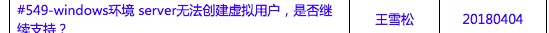
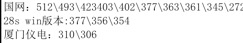

2018-04¶
2018-04-02¶
| 2018-04-02 08:49:59 | 你 | 孙世霖要离职啊 |
| 2018-04-02 08:50:18 | 我 | 是，走了正好 |
| 2018-04-02 08:50:26 | 你 | 我想的也是 |
| 2018-04-02 08:50:35 | 我 | 我前几天还在想怎么让他离职呢 |
| 2018-04-02 08:50:40 | 你 | 还怕你有什么顾忌呢 |
| 2018-04-02 08:51:37 | 我 | 现在麻烦的就是调配人，幸好当初安排尹志军和他一起做 |
| 2018-04-02 08:51:39 | 你 | decode的你就说评估结果就行 我是不打算放在G7了 |
| 2018-04-02 08:51:47 | 你 | 回头我跟赵益矫情去 |
| 2018-04-02 08:51:49 | 我 | 好的 |
| 2018-04-02 08:51:52 | 你 | 我觉得问题不大 |
| 2018-04-02 08:51:56 | 你 | 是 |
| 2018-04-02 08:52:04 | 你 | 这个人 成事不足败事有余 |
| 2018-04-02 08:52:20 | 我 | 嗯嗯 |
| 2018-04-02 08:53:04 | 你 | 我觉得刘正超没准也会离职 |
| 2018-04-02 08:53:14 | 我 | 嗯嗯 |
| 2018-04-02 09:20:09 | 我 | 哈哈，老张怼王总 |
| 2018-04-02 09:23:27 | 你 | 是，这事王总应该拖拖牟魏 |
| 2018-04-02 13:21:54 | 我 | 困死了 |
| 2018-04-02 13:23:25 | 你 | 咱俩最近都好忙啊 |
| 2018-04-02 13:23:34 | 你 | 我最近这几天都不得闲了 |
| 2018-04-02 13:23:37 | 我 | 是，特别忙 |
| 2018-04-02 13:23:43 | 你 | 昨天我跟李杰聊了一下午 |
| 2018-04-02 13:23:48 | 我 | 嗯嗯 |
| 2018-04-02 13:23:51 | 你 | 她开了好多窍 |
| 2018-04-02 13:23:53 | 我 | 都聊啥了 |
| 2018-04-02 13:23:55 | 你 | 这都是你的功劳 |
| 2018-04-02 13:24:00 | 我 | 哈哈，太好了 |
| 2018-04-02 13:24:05 | 你 | 特别感谢你 |
| 2018-04-02 13:24:17 | 你 | 等下次咱们去北京玩 |
| 2018-04-02 13:24:23 | 你 | 让她请你吃好吃的 |
| 2018-04-02 13:24:24 | 我 | 嗯嗯 |
| 2018-04-02 13:24:48 | 我 | 这是今天最好的消息，好开心呀😊 |
| 2018-04-02 13:25:06 | 你 | 是 |
| 2018-04-02 13:25:10 | 你 | 我俩昨天都特别开心 |
| 2018-04-02 13:25:16 | 你 | 我跟他说了好多 |
| 2018-04-02 13:25:20 | 你 | 他也跟我说了好多 |
| 2018-04-02 13:25:22 | 我 | 嗯嗯 |
| 2018-04-02 13:25:33 | 你 | 虽然有些理解是错的 我都给她纠正了 |
| 2018-04-02 13:25:39 | 你 | 关键是她都听明白了 |
| 2018-04-02 13:25:49 | 我 | 太好了 |
| 2018-04-02 13:25:58 | 你 | 我能感觉出来 她真的听进去 而且捋顺了 |
| 2018-04-02 13:26:04 | 我 | 以后你们就可以慢慢沟通了 |
| 2018-04-02 13:26:08 | 我 | 嗯 |
| 2018-04-02 13:26:11 | 你 | 不像以前 铜墙铁壁的 |
| 2018-04-02 13:26:12 | 你 | 是 |
| 2018-04-02 13:26:37 | 你 | 我跟他说 你负责撬开她 剩下的小打小闹的 我来给她说就行 |
| 2018-04-02 13:26:49 | 你 | 毕竟我俩沟通成本比你跟她要低很多 |
| 2018-04-02 13:26:55 | 你 | 我超级开心 |
| 2018-04-02 13:27:06 | 我 | 嗯嗯，我也很开心 |
| 2018-04-02 13:27:28 | 你 | 然后她还跟我说她的感受 就跟我当初跟你说一样 |
| 2018-04-02 13:27:39 | 你 | 我就说 其实李杰也很聪明 比我聪明 |
| 2018-04-02 13:27:44 | 我 | 是 |
| 2018-04-02 13:27:49 | 你 | 只是我教不来她 |
| 2018-04-02 13:28:03 | 你 | 只能你出马才行 |
| 2018-04-02 13:28:19 | 我 | 嗯 |
| 2018-04-02 13:28:27 | 你 | 超开心 |
| 2018-04-02 13:28:30 | 我 | 不过她和你的路可能不一样 |
| 2018-04-02 13:28:39 | 我 | 你俩差距还是蛮大的 |
| 2018-04-02 13:28:54 | 你 | 说说 |
| 2018-04-02 13:28:59 | 我 | 不过没关系，她现在这个层次你还能教她 |
| 2018-04-02 13:29:05 | 你 | 是 |
| 2018-04-02 13:29:15 | 你 | 小打小闹的我就行 |
| 2018-04-02 13:29:17 | 我 | 你俩的恐惧不完全一样 |
| 2018-04-02 13:29:28 | 我 | 他的恐惧比你的更难处理 |
| 2018-04-02 13:29:40 | 你 | 我没有给她讲恐惧这件事 |
| 2018-04-02 13:30:02 | 你 | 只是说了说自我、超我、本我的事 我把你一起写上的那篇文章也发给她了 |
| 2018-04-02 13:30:15 | 我 | 嗯嗯 |
| 2018-04-02 13:30:20 | 你 | 恐惧、自由这件事我想过些日子 观察观察再跟她说 |
| 2018-04-02 13:30:31 | 我 | 那篇是写给你，他看还有点深 |
| 2018-04-02 13:30:34 | 你 | 而且我有本克氏的《论恐惧》 |
| 2018-04-02 13:30:36 | 我 | 嗯嗯 |
| 2018-04-02 13:30:42 | 你 | 这次回家拿给她 |
| 2018-04-02 13:58:24 | 你 | 赵总单独给测试的开会呢吗？ |
| 2018-04-02 13:58:32 | 我 | 是的 |
| 2018-04-02 13:58:41 | 你 | 说什么主演 |
| 2018-04-02 13:58:44 | 我 | 这次雪风算是惨了 |
| 2018-04-02 13:58:49 | 你 | 怎么了 |
| 2018-04-02 13:58:57 | 你 | 他挑事 |
| 2018-04-02 13:58:59 | 我 | 就是上次让王总给卖了 |
| 2018-04-02 13:59:03 | 你 | 活该 |
| 2018-04-02 13:59:16 | 我 | 就是，没事瞎叫唤 |
| 2018-04-02 13:59:34 | 你 | 我觉得也是 |
| 2018-04-02 14:00:02 | 我 | 以前这些事情咱们都是私下解决，现在他非得放到会上 |
| 2018-04-02 14:00:08 | 你 | 是 |
| 2018-04-02 14:00:18 | 你 | 而且自己准备也不充分 |
| 2018-04-02 14:00:42 | 你 | 赵总啥态度 |
| 2018-04-02 14:01:16 | 我 | 赵总的意思加班都不够，就不要嚷嚷活干不完 |
| 2018-04-02 14:01:34 | 我 | 这就是老陈给宠的 |
| 2018-04-02 14:05:15 | 你 | 是，雪风不是说150百分之了吗 |
| 2018-04-02 14:05:42 | 我 | 现在不是已经晚了 |
| 2018-04-02 15:01:22 | 你 | 你把我叫进去呗 |
| 2018-04-02 15:01:34 | 你 | 我想听听 |
| 2018-04-02 15:08:36 | 我 | 王总今天是要找胜利的麻烦 |
| 2018-04-02 15:08:43 | 你 | 是 |
| 2018-04-02 15:08:50 | 你 | 中午特意找我确认了 |
| 2018-04-02 15:08:58 | 你 | 白板上的图就是我画的 |
| 2018-04-02 15:09:05 | 我 | 😄 |
| 2018-04-02 15:09:26 | 你 | 胜利也傻了 |
| 2018-04-02 15:09:49 | 我 | 嗯嗯 |
| 2018-04-02 15:28:50 | 我 | 王总也是糊涂 |
| 2018-04-02 15:29:22 | 你 | 是 |
| 2018-04-02 16:39:25 | 你 | 你太让我伤心了 |
| 2018-04-02 16:39:35 | 我 | 啊 |
| 2018-04-02 16:39:37 | 我 | 咋了 |
| 2018-04-02 16:39:38 | 你 | 我辛辛苦苦给你测出来 你跟没事人似的 |
| 2018-04-02 16:39:46 | 我 | 哈哈 |
| 2018-04-02 16:39:55 | 我 | 李杰正找我聊天呢 |
| 2018-04-02 16:40:07 | 你 | 以后再做这么烂的设计 我可不依 |
| 2018-04-02 16:40:20 | 我 | 别说你，我都不干 |
| 2018-04-02 16:40:35 | 你 | 我到时候桶给王总去 |
| 2018-04-02 16:40:40 | 你 | 让你们研发的得瑟 |
| 2018-04-02 16:41:09 | 我 | 以后这些事情，王胜利的设计权就被剥夺了 |
| 2018-04-02 16:41:45 | 我 | 正好我借着王总，把研发好好整治一下 |
| 2018-04-02 16:41:52 | 你 | 今天王胜利肯定坑咱们了 |
| 2018-04-02 16:42:00 | 你 | 他JDBC设计的肯定有问题 |
| 2018-04-02 16:42:08 | 你 | 虽然他最后说就是没做传输 |
| 2018-04-02 16:42:17 | 你 | 我现在就去找王总 |
| 2018-04-02 16:42:23 | 我 | 我知道 |
| 2018-04-02 16:42:25 | 你 | 跟王总说delimident的事 |
| 2018-04-02 16:42:31 | 我 | 我不建议你去找 |
| 2018-04-02 16:43:00 | 你 | 那我就去找王胜利 |
| 2018-04-02 16:43:01 | 我 | 首先是现在你这个测试本身不能说明王胜利做错了，也有可能是历史遗留的 |
| 2018-04-02 16:43:10 | 你 | 我不想说王胜利做错了 |
| 2018-04-02 16:43:17 | 你 | 我就说现在产品设计有问题 |
| 2018-04-02 16:43:29 | 你 | 他以为caseshift改了就行了 其实delimident还有we提 |
| 2018-04-02 16:43:33 | 我 | 第二现在王总本来就对王胜利有意见了，你这么去找没准反而让他翻盘了 |
| 2018-04-02 16:43:39 | 我 | 我知道 |
| 2018-04-02 16:43:47 | 我 | 所以这事我想慢慢调查 |
| 2018-04-02 16:44:06 | 我 | 我要一次把他们所有研发都干掉 |
| 2018-04-02 16:44:16 | 我 | 包括张杰在内 |
| 2018-04-02 16:44:30 | 我 | 这事是天赐良机，正好可以大做文章 |
| 2018-04-02 16:44:32 | 你 | 好吧 那我等任虹雨的测试结果 测试完再说 |
| 2018-04-02 16:45:25 | 我 | 我们要一鼓作气 |
| 2018-04-02 16:45:48 | 我 | 所以这事先压着，等压力足够大了再往外说 |
| 2018-04-02 16:46:09 | 我 | 而且现在设计你不知道，我不知道，张杰又帮着胜利说话 |
| 2018-04-02 16:46:55 | 我 | 你把你测试的结果给我就行，别给别人 |
| 2018-04-02 16:50:42 | 你 | 好 |
| 2018-04-02 16:50:47 | 你 | 我先拿到 然后给你 |
| 2018-04-02 16:51:03 | 我 | 嗯，这次一定要大获全胜 |
| 2018-04-02 16:51:14 | 你 | 我想跟你说的是 李杰不是你的挡箭牌 |
| 2018-04-02 16:51:21 | 我 | 彻底让他们听咱俩的 |
| 2018-04-02 16:51:24 | 你 | 你不能老是拿李杰『搪塞』我 |
| 2018-04-02 16:51:36 | 我 | 嗯嗯，对不起 |
| 2018-04-02 16:51:54 | 你 | 除非你承认李杰别我重要 |
| 2018-04-02 16:51:58 | 你 | 那样的话 我就认可你 |
| 2018-04-02 16:52:14 | 我 | 怎么可能能 |
| 2018-04-02 16:52:35 | 你 | 你还有事吗 |
| 2018-04-02 16:52:41 | 你 | 我把活都交出去了 |
| 2018-04-02 16:52:45 | 我 | 没事了 |
| 2018-04-02 17:13:24 | 我 | 这事别说了，我不想让高杰知道 |
| 2018-04-02 17:13:34 | 我 | 东江他们已经改完了 |
| 2018-04-02 17:13:36 | 你 | 哦 哦哦 |
| 2018-04-02 17:13:38 | 你 | sorry |
| 2018-04-02 17:13:44 | 你 | 啊！！！ |
| 2018-04-02 17:13:47 | 你 | 好么 |
| 2018-04-02 17:13:48 | 我 | 就两条 if 判断 |
| 2018-04-02 17:13:49 | 你 | 真晕 |
| 2018-04-02 17:13:53 | 你 | 好吧 |
| 2018-04-02 17:14:00 | 我 | 注释掉就可以了 |
| 2018-04-02 17:14:01 | 你 | 你早跟我说啊 |
| 2018-04-02 17:14:03 | 你 | 哎呀 |
| 2018-04-02 17:14:11 | 我 | 所以我不知道后面有大的坑 |
| 2018-04-02 17:14:37 | 你 | 我可喜欢跟你讨论这些事 |
| 2018-04-02 17:14:38 | 我 | 现在东江还没测出来不行的场景 |
| 2018-04-02 17:14:46 | 你 | 知道了 |
| 2018-04-02 17:14:47 | 我 | 就像你说，人家是已经做了 |
| 2018-04-02 17:14:56 | 你 | 我估计那帮测试的也测不出来 |
| 2018-04-02 17:14:58 | 我 | 但是咱们不知道范围，不知道坑在哪 |
| 2018-04-02 17:15:09 | 你 | 我明白你的意思 |
| 2018-04-02 17:15:10 | 我 | 我现在不敢说，是怕高杰和雪风找事 |
| 2018-04-02 17:15:24 | 你 | 如果这个只是加个if 也算未完成 |
| 2018-04-02 17:15:37 | 我 | 不是加，是删掉 |
| 2018-04-02 17:15:39 | 你 | 但是仅仅加个if 背后的那一套不知道 就是大坑了 |
| 2018-04-02 17:15:50 | 我 | 就是你说的报错 |
| 2018-04-02 17:16:08 | 你 | 就是代码已经有了 被注释了吗 |
| 2018-04-02 17:16:13 | 我 | 删掉那条报错就能干活了[流汗] |
| 2018-04-02 17:16:19 | 你 | 哦 |
| 2018-04-02 17:16:22 | 你 | 明白了 |
| 2018-04-02 17:16:25 | 你 | 那估计不行吧 |
| 2018-04-02 17:16:35 | 你 | 要是那样 人家删掉不就得了 |
| 2018-04-02 17:16:39 | 我 | 就是人家前面加个栅栏，不让进 |
| 2018-04-02 17:16:46 | 你 | 东江都怎么测试的 |
| 2018-04-02 17:16:51 | 你 | 明白了 |
| 2018-04-02 17:16:52 | 我 | 结果咱们拆了栅栏 |
| 2018-04-02 17:16:53 | 你 | 知道了 |
| 2018-04-02 17:16:57 | 你 | 知道了 |
| 2018-04-02 17:17:00 | 你 | 这是个大坑 |
| 2018-04-02 17:17:02 | 你 | 哈哈 |
| 2018-04-02 17:17:03 | 我 | 这个测试场景太多了 |
| 2018-04-02 17:17:20 | 你 | 你知道东江怎么测试的吗 |
| 2018-04-02 17:17:28 | 你 | 那我按照项目写得了 |
| 2018-04-02 17:17:29 | 你 | 你说呢 |
| 2018-04-02 17:17:37 | 我 | 按项目写吧 |
| 2018-04-02 17:17:41 | 你 | 直接把隔离级别设成last committed |
| 2018-04-02 17:17:55 | 你 | 而且只读 |
| 2018-04-02 17:17:56 | 我 | 他们是想多测点，但是很难覆盖全 |
| 2018-04-02 17:18:13 | 你 | 我是怕他们测试跑偏了 |
| 2018-04-02 17:18:18 | 你 | 东江他们 |
| 2018-04-02 17:18:56 | 我 | 嗯嗯 |
| 2018-04-02 17:19:00 | 我 | 你先写吧 |
| 2018-04-02 17:19:10 | 我 | 你知道现在什么情况就行了 |
| 2018-04-02 17:19:23 | 我 | 这个对研发对测试都不好办 |
| 2018-04-02 17:19:39 | 我 | 而且东江还和王总说了[流汗] |
| 2018-04-02 17:20:00 | 你 | 跟王总说啥了 |
| 2018-04-02 17:20:16 | 我 | 删了两行就好了 |
| 2018-04-02 17:20:24 | 你 | 真蠢 |
| 2018-04-02 17:20:30 | 我 | 是 |
| 2018-04-02 17:23:31 | 你 | 由问题分析可知，浙江电力公司项目的用户需求为：要求在多个实例的事务隔离级别一致，为last committed的前提下，8s子查询在现有基础上，支持设置为跨实例union查询。具体为： 1. union查询中跨的实例个数大于等于2个； 2. 子查询中union个数、子查询嵌套层数与现有系统保持一致； 3. 事务隔离级别last committed在子查询支持的跨实例union查询场景中的表现与不在子查询中跨实例union查询时保持一致。 |
| 2018-04-02 17:23:35 | 你 | 你看下 |
| 2018-04-02 17:24:28 | 我 | 嗯嗯，还要强调一下是只读事务 |
| 2018-04-02 17:24:44 | 你 | 没有说写的事 都是查询 |
| 2018-04-02 17:24:47 | 我 | 就是只有这一条读语句 |
| 2018-04-02 17:24:51 | 你 | 我补一下吧 |
| 2018-04-02 17:25:10 | 我 | 我估计雪风会问和其他 DML 混合在一起的场景用不用测 |
| 2018-04-02 17:25:44 | 你 | 要求在多个实例的事务隔离级别一致均为last committed，跨实例不存在写（insert、update）操作的前提下，8s子查询在现有基础上，支持设置为跨实例union查询。 |
| 2018-04-02 17:26:05 | 我 | 不是的 |
| 2018-04-02 17:26:16 | 我 | 是说这条语句是一个独立的事务 |
| 2018-04-02 17:26:28 | 我 | 不和其他DML语句混合在一个事务里面 |
| 2018-04-02 17:26:36 | 你 | 但是本地会有insert |
| 2018-04-02 17:26:39 | 你 | 这个我确认过了 |
| 2018-04-02 17:26:58 | 我 | 要确认是不是在一个事务 |
| 2018-04-02 17:27:02 | 我 | 这个场景不一样 |
| 2018-04-02 17:27:11 | 我 | 要是在一个事务里面，就会复杂很多 |
| 2018-04-02 17:27:19 | 你 | 本地insert、 本地insert、 远程select、 这种场景 |
| 2018-04-02 17:27:27 | 我 | 需要测试失败回滚的情况 |
| 2018-04-02 17:27:34 | 你 | 这个我再确认一下 |
| 2018-04-02 17:28:58 | 你 | 那你让东江测试下跨事务的不就行了吗 |
| 2018-04-02 17:29:07 | 你 | 我不排除现场会这么用啊 |
| 2018-04-02 17:29:13 | 你 | 我正在给你确认 |
| 2018-04-02 17:29:40 | 我 | 你先确认吧，我是说如果现场这么用了，雪风他们就会构建非常多的用例 |
| 2018-04-02 17:39:52 | 你 | [链接] 孙晓亮和李辉的聊天记录 |
| 2018-04-02 17:39:59 | 你 | 放心了 |
| 2018-04-02 19:12:20 | 我 | http://www.cnblogs.com/svennee/p/4080640.html |
| 2018-04-02 19:17:24 | 我 | 累坏了吧 |
| 2018-04-02 19:39:47 | 我 | 那是因为你后面有我 |
| 2018-04-02 19:40:00 | 你 | 好吧 |
| 2018-04-02 19:40:05 | 你 | 我知道啦 |
| 2018-04-02 19:40:10 | 我 | 明天你一定要卷卷 L3 |
| 2018-04-02 19:40:11 | 你 | 这要是没你可咋整 |
| 2018-04-02 19:40:15 | 我 | 太不负责任了 |
| 2018-04-02 19:40:20 | 你 | 我懒得搭理王志 |
| 2018-04-02 19:40:28 | 我 | 旭明这种作风我看着很生气 |
| 2018-04-02 19:40:29 | 你 | 我卷的话 肯定卷旭明 |
| 2018-04-02 19:40:38 | 我 | 只是我的位置不好说话 |
| 2018-04-02 19:40:56 | 我 | 一定要说，让王总知道 |
| 2018-04-02 19:41:09 | 我 | 本来这种使用问题就是 L3的本职 |
| 2018-04-02 19:41:11 | 你 | 我一说王总还以为我躲事呢 |
| 2018-04-02 19:41:18 | 你 | 我说一下 |
| 2018-04-02 19:41:20 | 你 | 哈哈 |
| 2018-04-02 19:41:33 | 我 | 我告诉你，这一定是王志在后面捣乱 |
| 2018-04-02 19:41:47 | 我 | 现在旭明被他忽悠了 |
| 2018-04-02 19:41:48 | 你 | 是吧 |
| 2018-04-02 19:41:52 | 你 | 那我就说说 |
| 2018-04-02 19:42:08 | 我 | 旭明本来是一个什么都喜欢看看，动手试一下的 |
| 2018-04-02 19:42:25 | 我 | 而且这两个使用问题一眼就能看出来 |
| 2018-04-02 19:42:50 | 你 | 是吧 |
| 2018-04-02 19:43:04 | 你 | 那估计是王志捣乱 |
| 2018-04-02 19:43:24 | 我 | 嗯嗯 |
| 2018-04-02 19:43:44 | 你 | 那我回家了 |
| 2018-04-02 19:43:45 | 你 | 亲 |
| 2018-04-02 19:43:54 | 我 | 嗯嗯，回家吧 |
| 2018-04-02 22:31:13 | 你 | [链接] 群聊的聊天记录 |
| 2018-04-02 22:31:20 | 你 | 别回复 |
2018-04-03¶
| 2018-04-03 09:41:53 | 你 | delimident参数在JDBC大小写展示效果_20180402_rhy.xlsx |
| 2018-04-03 09:41:57 | 你 | 你有时间看下吧 |
| 2018-04-03 09:42:10 | 我 | 好 |
| 2018-04-03 09:42:44 | 我 | 没测 JDBC 吗 |
| 2018-04-03 09:42:57 | 你 | 测了啊 |
| 2018-04-03 09:43:01 | 你 | 两个sheet |
| 2018-04-03 09:43:10 | 你 | |
| 2018-04-03 09:43:22 | 你 | |
| 2018-04-03 09:43:23 | 我 | 看见了 |
| 2018-04-03 09:44:12 | 你 | 从这个结果看 caseshift不是建辉说的那个作用 |
| 2018-04-03 09:44:49 | 我 | 我觉得可能是被改伤了 |
| 2018-04-03 09:44:57 | 我 | 你们用什么场景测试的 |
| 2018-04-03 09:44:59 | 你 | informix的delimident=n的行为没了 |
| 2018-04-03 09:45:22 | 你 | 8t的delimident=n不是informix的delimident=n的行为 |
| 2018-04-03 09:45:37 | 我 | 我说一下我的想法把 |
| 2018-04-03 09:45:51 | 你 | create table t1(“A” int,a int); info columns for t1 |
| 2018-04-03 09:45:55 | 你 | 这么测试的 |
| 2018-04-03 09:46:23 | 我 | select 和 info 一样吗 |
| 2018-04-03 09:46:42 | 你 | 我问问哈 |
| 2018-04-03 09:47:56 | 你 | 听到了吧 |
| 2018-04-03 09:48:12 | 我 | 嗯嗯 |
| 2018-04-03 10:00:54 | 我 | 你们测试了带双引号和不带双引号两种场景吗？ |
| 2018-04-03 10:01:26 | 你 | 你给我写个例子 |
| 2018-04-03 10:02:01 | 我 | create table t1(“A” int,a int); info columns for t1 create table t1(A int,a int); info columns for t1 |
| 2018-04-03 10:02:14 | 你 | 我怀疑caseshift可能设置的没生效 还有就是case覆盖的不全 |
| 2018-04-03 10:02:16 | 你 | 没测 |
| 2018-04-03 10:02:28 | 你 | 我现在让她测晓亮的case |
| 2018-04-03 10:02:29 | 我 | 嗯嗯，你说的对 |
| 2018-04-03 10:02:40 | 你 | create table t1(level int); |
| 2018-04-03 10:02:53 | 你 | select * from t1 where “LEVEL”>10 |
| 2018-04-03 10:03:05 | 我 | 咱们系统缺省行为是小写 |
| 2018-04-03 10:03:08 | 你 | 测这个场景 |
| 2018-04-03 10:03:49 | 你 | create table t1(“A” int,”Aa” int); info columns for t1 |
| 2018-04-03 10:05:24 | 你 | ➢ 由于该版本不区分大小写，因此出现靠仅大小写区分的表名或字段名，不能共存。 |
| 2018-04-03 10:05:45 | 我 | 嗯嗯 |
| 2018-04-03 10:06:01 | 你 | 虹雨说他已经重启了 |
| 2018-04-03 10:06:13 | 你 | caseshift没生效的话 就不知道了 |
| 2018-04-03 10:06:41 | 我 | 嗯嗯 |
| 2018-04-03 10:06:46 | 我 | 你好帅呀 |
| 2018-04-03 10:06:53 | 你 | 张道山还不让我测 |
| 2018-04-03 10:06:58 | 你 | 我呸 |
| 2018-04-03 10:07:03 | 你 | 我非得测出来不可 |
| 2018-04-03 10:07:06 | 我 | 嗯嗯 |
| 2018-04-03 10:07:11 | 你 | 非得把这件事搞明白 |
| 2018-04-03 10:07:15 | 我 | 张道山现在明显是压着你 |
| 2018-04-03 10:07:25 | 我 | 他自己一直在悄悄的测什么 |
| 2018-04-03 10:07:30 | 你 | 比这难的系统分析我都能做 何况这么点东西 |
| 2018-04-03 10:09:09 | 你 | 王总说都没用 我必须测出来 |
| 2018-04-03 10:09:13 | 你 | 我就喜欢测 |
| 2018-04-03 10:09:19 | 我 | 嗯嗯 |
| 2018-04-03 10:09:25 | 你 | 正赶上虹雨会写java代码 |
| 2018-04-03 10:11:01 | 你 | 我给你看看刘正超写的软需 |
| 2018-04-03 10:11:04 | 你 | 可搞笑了 |
| 2018-04-03 10:12:01 | 你 | T3_410_软件需求规格说明书_浙江电力公司_子查询支持跨实例查询_v1.0_20180403_lzc.docx |
| 2018-04-03 10:12:23 | 你 | 你别着急了 就等着我的测试结果吧 肯定很好玩 咱俩先搞明白再说 |
| 2018-04-03 10:12:34 | 我 | 嗯嗯 |
| 2018-04-03 11:20:53 | 你 | decode的也测试完了 你要结论吗 |
| 2018-04-03 11:21:00 | 我 | 嗯嗯 |
| 2018-04-03 11:21:37 | 你 | decode函数行为调研报告_lh_20170403.docx |
| 2018-04-03 11:23:47 | 我 | 支持数值型、日期型转换为字符型；varchar—–123 这是什么意思？转换是从左到右还是从右到左？ |
| 2018-04-03 11:24:32 | 你 | 右到左 |
| 2018-04-03 11:24:42 | 你 | 你看下文字描述 |
| 2018-04-03 11:24:53 | 你 | 例子全是右到左 |
| 2018-04-03 11:24:54 | 我 | 命中值是指返回值1或者返回值2，取决于最后返回哪个吧 |
| 2018-04-03 11:25:00 | 你 | 是 |
| 2018-04-03 11:25:02 | 我 | 呵呵，好别扭 |
| 2018-04-03 11:25:06 | 你 | 这个没做名词解释 |
| 2018-04-03 11:25:12 | 我 | 嗯嗯 |
| 2018-04-03 11:26:55 | 你 | 哪别扭 我改改 |
| 2018-04-03 11:27:11 | 我 | 从右到左 |
| 2018-04-03 11:27:32 | 你 | 因为是其他返回值像第一个返回值转 |
| 2018-04-03 11:27:44 | 我 | 那就加个箭头吧 |
| 2018-04-03 11:27:49 | 你 | 所以例子是从右到左的 |
| 2018-04-03 11:27:50 | 你 | 好的 |
| 2018-04-03 11:27:52 | 你 | 说得对 |
| 2018-04-03 11:28:02 | 你 | 例子我准备删掉 |
| 2018-04-03 11:28:04 | 你 | 你说呢 |
| 2018-04-03 11:28:16 | 我 | 留着吧 |
| 2018-04-03 11:29:19 | 你 | ➢ 支持数值型、日期型转换为字符型；varchar ← 123, varchar ← date ➢ 支持纯数值字符串转换为数值型；int ← ‘123’ ➢ 支持日期型字符串转换为日期型；date ← ‘2017-01-01’ ➢ 不支持数值型转换为日期型；date ← 20170101 |
| 2018-04-03 11:29:26 | 你 | 这么看是不是好看点 |
| 2018-04-03 11:29:27 | 我 | 嗯嗯 |
| 2018-04-03 11:30:39 | 你 | 这份报告测试了至少3天才写出来 |
| 2018-04-03 11:30:47 | 你 | 刘利很靠谱 |
| 2018-04-03 11:30:48 | 我 | 啊 |
| 2018-04-03 11:30:53 | 你 | 果然没看错他 |
| 2018-04-03 11:31:01 | 我 | 嗯嗯 |
| 2018-04-03 11:31:02 | 你 | 但是他沟通能力很差 |
| 2018-04-03 11:31:07 | 你 | 不是一般的差 |
| 2018-04-03 11:31:11 | 我 | 哈哈 |
| 2018-04-03 11:31:28 | 你 | 其实他适合做开发 |
| 2018-04-03 11:31:32 | 你 | 不适合做需求 |
| 2018-04-03 11:32:03 | 我 | 哦 |
| 2018-04-03 11:42:08 | 你 | union查询的隐式转换规则也测试完了 |
| 2018-04-03 11:42:17 | 我 | 嗯嗯 |
| 2018-04-03 11:42:21 | 你 | 咱们做的是数值和字符的 |
| 2018-04-03 11:42:28 | 你 | 就差一个日期和字符的 |
| 2018-04-03 11:42:38 | 你 | 这个场景下的隐式类型转换比较简单 |
| 2018-04-03 11:42:48 | 我 | 好，基本上隐式转换规则就出来了 |
| 2018-04-03 11:43:24 | 你 | 
|
| 2018-04-03 11:43:27 | 你 | 你简单看下 |
| 2018-04-03 11:43:32 | 你 | 我就不给发文件了 |
| 2018-04-03 11:43:46 | 我 | 嗯嗯 |
| 2018-04-03 11:51:16 | 你 |  |
| 2018-04-03 11:51:21 | 你 | 高杰把这个任务给你了 |
| 2018-04-03 11:51:22 | 你 | 呵呵 |
| 2018-04-03 11:51:54 | 我 | 呵呵 |
| 2018-04-03 11:51:58 | 我 | 不理他 |
| 2018-04-03 11:52:06 | 你 | 嗯嗯 理他做甚 |
| 2018-04-03 11:52:24 | 我 | 嗯嗯 |
| 2018-04-03 11:52:34 | 我 | 今天我没啥事了 |
| 2018-04-03 11:52:41 | 我 | 你晚上去打球吗 |
| 2018-04-03 11:55:46 | 你 | 不去了 |
| 2018-04-03 11:56:31 | 我 | 嗯嗯 |
| 2018-04-03 12:46:26 | 你 | 感觉最近聊天不多啊 |
| 2018-04-03 12:46:32 | 你 | 有新欢了？ |
| 2018-04-03 12:46:39 | 我 | 谁呀 |
| 2018-04-03 12:46:49 | 我 | 是咱俩太忙了 |
| 2018-04-03 12:46:54 | 你 | 你跟我啊，还能有谁 |
| 2018-04-03 12:47:01 | 我 | 每天我都想和你聊 |
| 2018-04-03 12:47:15 | 我 | 每天不是你有事就是我有事 |
| 2018-04-03 12:47:26 | 我 | 要不今天晚上咱俩面谈去 |
| 2018-04-03 12:47:34 | 你 | 好啊 |
| 2018-04-03 12:47:37 | 你 | 下午去 |
| 2018-04-03 12:48:00 | 我 | 算了，太冷了。等晚上下班以后去车里聊吧 |
| 2018-04-03 12:48:10 | 你 | 也行 |
| 2018-04-03 12:48:25 | 你 | 有要说的吗？ |
| 2018-04-03 12:48:31 | 我 | 好多呢 |
| 2018-04-03 12:48:34 | 你 | 实在是太忙了 |
| 2018-04-03 12:48:39 | 我 | 是 |
| 2018-04-03 12:48:41 | 你 | 说说议题 |
| 2018-04-03 12:48:46 | 我 | 你的恐惧 |
| 2018-04-03 12:48:58 | 我 | 我的纠结 |
| 2018-04-03 12:49:01 | 我 | 还有李杰 |
| 2018-04-03 12:49:04 | 你 | 又发现新的东西了吗 |
| 2018-04-03 12:49:14 | 我 | 嗯嗯 |
| 2018-04-03 12:49:17 | 你 | 我只想听你的纠结 |
| 2018-04-03 12:49:35 | 你 | 李杰有时间再说吧 |
| 2018-04-03 12:49:55 | 你 | 让她自己开化开化 |
| 2018-04-03 12:50:06 | 你 | 说说你的纠结 |
| 2018-04-03 12:50:17 | 你 | 我的恐惧晚上说 |
| 2018-04-03 12:50:20 | 你 | 你睡觉吗 |
| 2018-04-03 12:50:21 | 我 | 好 |
| 2018-04-03 12:50:24 | 我 | 不睡了 |
| 2018-04-03 12:50:35 | 你 | 说吧 |
| 2018-04-03 12:50:41 | 你 | 我也不睡了 |
| 2018-04-03 12:50:44 | 我 | 我的纠结在于我的本我 |
| 2018-04-03 12:51:05 | 你 | 先说你想明白了吗？ |
| 2018-04-03 12:51:18 | 我 | 还没有，大体上有点眉目了 |
| 2018-04-03 12:51:26 | 你 | 说说 |
| 2018-04-03 12:51:46 | 我 | 这么说吧，你还记得之前咱们说起过知己 |
| 2018-04-03 12:51:51 | 你 | 记得 |
| 2018-04-03 12:51:59 | 我 | 我说你是我的知己 |
| 2018-04-03 12:52:03 | 你 | 是 |
| 2018-04-03 12:52:21 | 我 | 那个可以理解为自我的一种表述 |
| 2018-04-03 12:52:35 | 我 | 现在我发现这种感觉已经渗透进本我了 |
| 2018-04-03 12:53:06 | 你 | 你接着说 |
| 2018-04-03 12:53:10 | 你 | 我在理解 |
| 2018-04-03 12:53:11 | 我 | 这个和我以前一直猜想的一种理论相关 |
| 2018-04-03 12:53:38 | 我 | 我一直认为本我不是一成不变的，是会受到其他影响的 |
| 2018-04-03 12:53:53 | 我 | 一般人都是受到超我的影响，比如说你和李杰 |
| 2018-04-03 12:54:01 | 你 | 嗯嗯 |
| 2018-04-03 12:54:19 | 我 | 而我现在是本我受到自我的影响 |
| 2018-04-03 12:54:30 | 你 | 你的意思是说你的本我变了 |
| 2018-04-03 12:54:34 | 我 | 说实话我也是第一次碰见 |
| 2018-04-03 12:54:38 | 我 | 对 |
| 2018-04-03 12:54:41 | 你 | 受到自我的影响 |
| 2018-04-03 12:54:47 | 我 | 没错 |
| 2018-04-03 12:55:18 | 我 | 我和你说说本我的表现吧 |
| 2018-04-03 12:55:22 | 你 | 好 |
| 2018-04-03 12:55:32 | 我 | 我把你当成知己，这个本来是自我的行为 |
| 2018-04-03 12:55:37 | 你 | 嗯 |
| 2018-04-03 12:55:40 | 你 | 是 |
| 2018-04-03 12:55:45 | 我 | 从自我的角度，这个行为是非常理性的 |
| 2018-04-03 12:55:51 | 你 | 是，可以理解 |
| 2018-04-03 12:56:16 | 我 | 从此出发形成的为人、办事的风格也是很理性的 |
| 2018-04-03 12:56:28 | 你 | 是 |
| 2018-04-03 12:56:46 | 我 | 咱俩可以聊一切话题，但是都是在理性的环境下 |
| 2018-04-03 12:56:51 | 你 | 是 |
| 2018-04-03 12:56:55 | 你 | 明白 |
| 2018-04-03 12:57:00 | 我 | 甚至抱着你的时候，我都可以说是理性的 |
| 2018-04-03 12:57:04 | 你 | 嗯 |
| 2018-04-03 12:57:17 | 我 | 本我的变化是什么呢 |
| 2018-04-03 12:57:31 | 我 | 在这之前，本我一般不参与这些活动 |
| 2018-04-03 12:57:59 | 你 | 之前那些行为都是自觉的行为 |
| 2018-04-03 12:58:00 | 我 | 本我参与的时候都会是我特别感动之类的 |
| 2018-04-03 12:58:08 | 你 | 嗯嗯，我明白 |
| 2018-04-03 12:58:16 | 我 | 就像第一次握着你的手给你承诺一样 |
| 2018-04-03 12:58:33 | 我 | 但是最近本我开始参与一些 |
| 2018-04-03 12:58:48 | 我 | 比如说你最近和我讲话的时候，你发现我经常走神 |
| 2018-04-03 12:58:56 | 你 | 我也发现了 |
| 2018-04-03 12:59:00 | 你 | 经常 |
| 2018-04-03 12:59:07 | 我 | 我走神的原因就是本我被你吸引了 |
| 2018-04-03 12:59:23 | 我 | 注意力完全放在你，这个个体 |
| 2018-04-03 13:00:07 | 我 | 比如说我会注意你的眉毛长的有多好看，你戴眼镜的样子有多漂亮，你说话时小嘴有多可爱 |
| 2018-04-03 13:00:22 | 你 | 被吸引的时候，你想的就是这些对吗 |
| 2018-04-03 13:00:28 | 你 | 大概明白了 |
| 2018-04-03 13:00:32 | 我 | 嗯嗯 |
| 2018-04-03 13:00:47 | 我 | 关键是我的自我完全放弃控制权 |
| 2018-04-03 13:00:50 | 你 | 你觉得被吸引的理由就是本我受自我影响了 |
| 2018-04-03 13:00:58 | 你 | 嗯嗯 |
| 2018-04-03 13:01:11 | 你 | 走神是本我的一种表现 |
| 2018-04-03 13:01:13 | 我 | 我要想听你说话必须费很大的力气才能集中精神 |
| 2018-04-03 13:01:19 | 我 | 没错 |
| 2018-04-03 13:01:35 | 你 | 会不会是你觉得我说的不重要，而因此放松了呢 |
| 2018-04-03 13:01:41 | 我 | 不是 |
| 2018-04-03 13:02:00 | 你 | 你跟别人走过这种情况吗 |
| 2018-04-03 13:02:01 | 我 | 因为我能体会到那种纠结 |
| 2018-04-03 13:02:04 | 你 | 有 |
| 2018-04-03 13:02:08 | 我 | 没有过 |
| 2018-04-03 13:02:10 | 你 | 嗯 |
| 2018-04-03 13:02:16 | 你 | 你媳妇呢 |
| 2018-04-03 13:02:22 | 我 | 没有 |
| 2018-04-03 13:02:42 | 你 | 嗯 |
| 2018-04-03 13:02:44 | 我 | 很明显本我就想注意你，自我需要注意你说的话 |
| 2018-04-03 13:02:51 | 你 | 是 |
| 2018-04-03 13:02:52 | 我 | 两个人在不停纠结 |
| 2018-04-03 13:02:55 | 你 | 说的没错 |
| 2018-04-03 13:03:08 | 我 | 本我说让我再看一分钟，自我说不行啦，要耽误事啦 |
| 2018-04-03 13:03:15 | 你 | 哈哈 |
| 2018-04-03 13:03:20 | 你 | 我不得不笑了 |
| 2018-04-03 13:03:21 | 你 | 哈哈 |
| 2018-04-03 13:03:26 | 我 | 嗯嗯 |
| 2018-04-03 13:03:39 | 你 | 这个分析应该没问题， |
| 2018-04-03 13:03:44 | 你 | 我还有个问题 |
| 2018-04-03 13:03:50 | 我 | 嗯 |
| 2018-04-03 13:04:00 | 你 | 本我为什么会受到自我影响了呢 |
| 2018-04-03 13:04:14 | 你 | 自我、本我原来都好好的 |
| 2018-04-03 13:04:25 | 你 | 什么触发了这件事 |
| 2018-04-03 13:04:29 | 我 | 你是问机制还是问我的本我受到影响的原因 |
| 2018-04-03 13:04:40 | 你 | 后者 |
| 2018-04-03 13:04:59 | 你 | 前者我没想到，你也说说 |
| 2018-04-03 13:05:18 | 我 | 应该还是自我对你是我的知己这个定位 |
| 2018-04-03 13:05:44 | 我 | 本身 知己 这个概念在理性中就是评价非常高的一个等级 |
| 2018-04-03 13:06:08 | 我 | 与之相连的必然是快乐，而且是非常高质量的快乐 |
| 2018-04-03 13:06:32 | 你 | 嗯 |
| 2018-04-03 13:06:57 | 我 | 这种理性的快乐持续的久了以后，对本我就产生了影响 |
| 2018-04-03 13:07:06 | 我 | 这个是原因 |
| 2018-04-03 13:07:10 | 你 | 嗯 |
| 2018-04-03 13:07:21 | 我 | 机制是另外一回事 |
| 2018-04-03 13:07:38 | 我 | 首先，本我你可以理解为一个孩子 |
| 2018-04-03 13:07:44 | 你 | 嗯 |
| 2018-04-03 13:07:50 | 我 | 本身就容易受到外界的影响 |
| 2018-04-03 13:08:07 | 我 | 两个因素影响最大：快乐和恐惧 |
| 2018-04-03 13:08:14 | 你 | 嗯 |
| 2018-04-03 13:08:44 | 我 | 一般人大部分都是恐惧对本我的影响大 |
| 2018-04-03 13:08:55 | 你 | 嗯 |
| 2018-04-03 13:08:59 | 你 | 明白 |
| 2018-04-03 13:09:09 | 你 | 恐惧让人长记性 |
| 2018-04-03 13:09:17 | 我 | 所以大部分人的一生感觉不到快乐，需要像克氏那样的人去带领 |
| 2018-04-03 13:09:20 | 我 | 对 |
| 2018-04-03 13:09:27 | 你 | 明白 |
| 2018-04-03 13:09:39 | 你 | 我明白你想说什么了 |
| 2018-04-03 13:09:43 | 我 | 你说说 |
| 2018-04-03 13:10:07 | 你 | 你的本我受了快乐的影响 |
| 2018-04-03 13:10:41 | 我 | 嗯嗯 |
| 2018-04-03 13:11:01 | 你 | 本我受恐惧影响的时候 |
| 2018-04-03 13:11:12 | 你 | 会把恐惧根植到本我中 |
| 2018-04-03 13:11:25 | 你 | 有很多这方面的表现 |
| 2018-04-03 13:11:34 | 你 | 比如李杰的努力讨好别人 |
| 2018-04-03 13:11:43 | 你 | 就是恐惧根植的后果 |
| 2018-04-03 13:11:47 | 我 | 嗯嗯 |
| 2018-04-03 13:11:53 | 你 | 你是快乐 |
| 2018-04-03 13:12:01 | 我 | 对 |
| 2018-04-03 13:12:10 | 你 | 自我分析出来的快乐，根植到本我去了 |
| 2018-04-03 13:12:17 | 我 | 是的 |
| 2018-04-03 13:12:50 | 你 | 你说这个过程跟我有关吗 |
| 2018-04-03 13:13:07 | 你 | 是因为我带给你的正反馈导致的么？ |
| 2018-04-03 13:13:12 | 我 | 当然有关啦，就是因为你是我的知己 |
| 2018-04-03 13:13:46 | 你 | 我关心的是，你的本我受影响这件事为什么在这个点发生了 |
| 2018-04-03 13:14:00 | 我 | 什么叫这个点 |
| 2018-04-03 13:14:01 | 你 | 你明白我想表达什么吗？ |
| 2018-04-03 13:14:17 | 你 | 就是在咱俩相处到这个份上的时候 |
| 2018-04-03 13:14:34 | 你 | 比如，我成长的很慢的话，你会这样吗 |
| 2018-04-03 13:14:40 | 我 | 就算是时候到了吧 |
| 2018-04-03 13:14:45 | 我 | 这个很难说清楚 |
| 2018-04-03 13:15:04 | 你 | 再比如，我成长的比现在快的话，会在这之前发生吗 |
| 2018-04-03 13:15:12 | 我 | 我觉得有可能 |
| 2018-04-03 13:15:18 | 你 | 你的这种感觉我走过 |
| 2018-04-03 13:15:21 | 你 | 有过 |
| 2018-04-03 13:15:27 | 你 | 而且经常有 |
| 2018-04-03 13:15:28 | 我 | 说说 |
| 2018-04-03 13:15:37 | 你 | 可能我不像你那么理性 |
| 2018-04-03 13:15:59 | 你 | 还有就是我的感受不一定像你那么深刻 |
| 2018-04-03 13:16:04 | 我 | 嗯嗯 |
| 2018-04-03 13:16:17 | 你 | 我总是会在意外表的一些东西 |
| 2018-04-03 13:16:29 | 你 | 而且对这件事非常敏感 |
| 2018-04-03 13:16:55 | 你 | 比如，我跟旭明说话的时候，就会在意他的大脸 |
| 2018-04-03 13:17:09 | 我 | 嗯 |
| 2018-04-03 13:17:13 | 你 | 但是是很短暂的，不会影响我们沟通 |
| 2018-04-03 13:18:07 | 你 | 我觉得从程度上说，咱俩差别就很大了，因为我了解你有多理性 |
| 2018-04-03 13:18:27 | 你 | 如果你的自我都控制不住本我的话，肯定程度非常强烈 |
| 2018-04-03 13:18:45 | 我 | 嗯嗯 |
| 2018-04-03 13:18:49 | 你 | 我碰到的，程度都很微弱，转瞬即逝了 |
| 2018-04-03 13:19:46 | 你 | 你说你的这种情况 跟见到喜欢的人的时候 那种紧张到说不利索话 有类似的地方吗 |
| 2018-04-03 13:19:53 | 我 | 有 |
| 2018-04-03 13:20:10 | 我 | 前一半一样，后一半不一样 |
| 2018-04-03 13:20:15 | 你 | 只是欣赏吗？ |
| 2018-04-03 13:20:31 | 我 | 不只 |
| 2018-04-03 13:20:35 | 你 | 就是很敏锐的觉察到 『这个人』很美 |
| 2018-04-03 13:20:40 | 你 | 还是有别的 |
| 2018-04-03 13:20:48 | 我 | 有呀 |
| 2018-04-03 13:20:56 | 你 | 或者说『这个人』的鼻子、眼睛、嘴很可爱 |
| 2018-04-03 13:21:01 | 我 | 这种美可以带来快乐 |
| 2018-04-03 13:21:10 | 我 | 快乐是核心 |
| 2018-04-03 13:21:37 | 我 | 就是我看你哪都可以给我带来快乐 |
| 2018-04-03 13:21:39 | 你 | 就是看到『美丽』的事物 心生的快乐对吗 |
| 2018-04-03 13:21:44 | 我 | 对 |
| 2018-04-03 13:22:04 | 你 | 是爱屋及乌吗 |
| 2018-04-03 13:22:09 | 我 | 不是 |
| 2018-04-03 13:22:11 | 你 | 你看你儿子不这样吗 |
| 2018-04-03 13:22:21 | 我 | 哈哈，当然不是啦 |
| 2018-04-03 13:22:44 | 你 | 这件事就说到这吧 |
| 2018-04-03 13:22:51 | 你 | 然后我跟你说说我的感受 |
| 2018-04-03 13:23:02 | 我 | 嗯嗯 |
| 2018-04-03 13:23:25 | 你 | 我发现你对我 不像以前那么敏感了 |
| 2018-04-03 13:23:35 | 你 | 我说说具体点的 |
| 2018-04-03 13:23:58 | 你 | 第一、你开始跟我说话的时候走神，这个咱们已经聊过了 |
| 2018-04-03 13:24:18 | 你 | 第二、我发现我『碰』你的时候 你没有反应 |
| 2018-04-03 13:24:25 | 你 | 就是小动作 |
| 2018-04-03 13:24:29 | 你 | 我说的 |
| 2018-04-03 13:24:37 | 我 | 嗯嗯 |
| 2018-04-03 13:24:49 | 你 | 这两件事是我感触最深的 |
| 2018-04-03 13:25:01 | 你 | 第二件事你有感觉吗 |
| 2018-04-03 13:25:04 | 你 | 实话实说 |
| 2018-04-03 13:25:28 | 我 | 有，非常多。而且很多时候我也想同样的碰你 |
| 2018-04-03 13:25:41 | 你 | 不是 |
| 2018-04-03 13:25:46 | 你 | 我说的是你没反应 |
| 2018-04-03 13:25:52 | 你 | 以前你是有反应的 |
| 2018-04-03 13:25:55 | 我 | 哈哈 |
| 2018-04-03 13:25:58 | 你 | 你笑啥 |
| 2018-04-03 13:26:02 | 你 | 别乱笑 |
| 2018-04-03 13:26:14 | 我 | 我之前不是说过吗，我在收敛自己 |
| 2018-04-03 13:26:24 | 我 | 因为我发现本我和以前不一样了 |
| 2018-04-03 13:26:32 | 你 | 我很怀疑 |
| 2018-04-03 13:26:37 | 我 | 我不知道自己能不能控制这头大象 |
| 2018-04-03 13:26:44 | 你 | 我说错了 |
| 2018-04-03 13:26:50 | 你 | 其实你说的我都信 |
| 2018-04-03 13:26:57 | 你 | 我只是想再确认一下 |
| 2018-04-03 13:27:04 | 我 | 好吧，有一种情况我没说 |
| 2018-04-03 13:27:12 | 你 | 你说 |
| 2018-04-03 13:27:16 | 我 | 你知道我为啥晨会会到你身边吗 |
| 2018-04-03 13:27:32 | 我 | 因为我就是想离你近点 |
| 2018-04-03 13:27:41 | 你 | 离我近点为啥 |
| 2018-04-03 13:27:48 | 你 | 就是想离我近点？ |
| 2018-04-03 13:27:51 | 我 | 现在距离已经可以让我的本我有感觉了 |
| 2018-04-03 13:28:12 | 你 | 我以为你要说 对着我你会走神呢 |
| 2018-04-03 13:28:24 | 我 | 还有你注意到没有，每次和你一起看屏幕的时候，我总是挨着你很近 |
| 2018-04-03 13:28:37 | 我 | 这些都是本我干的 |
| 2018-04-03 13:28:44 | 你 | 这个没注意 |
| 2018-04-03 13:28:45 | 我 | 等自我发现的时候他都干完了 |
| 2018-04-03 13:28:50 | 你 | 哈哈 |
| 2018-04-03 13:28:51 | 你 | 哈哈 |
| 2018-04-03 13:29:16 | 我 | 还有就是现在不管有没有人，本我总是想做你说的那些小动作 |
| 2018-04-03 13:29:32 | 你 | 嗯嗯 知道了 |
| 2018-04-03 13:29:33 | 我 | 所以你做小动作，自我就会防范 |
| 2018-04-03 13:29:36 | 你 | 哦 |
| 2018-04-03 13:29:44 | 我 | 怕你们两个起正反馈 |
| 2018-04-03 13:29:45 | 你 | 我跟你说 最近我是故意试探你的 |
| 2018-04-03 13:29:58 | 你 | 因为我发现了你这个行为 我又不确定是怎么了 |
| 2018-04-03 13:30:05 | 你 | 我以为是你对我不敏感了 |
| 2018-04-03 13:30:07 | 我 | 嗯嗯 |
| 2018-04-03 13:30:15 | 你 | 所以想程度加深点试探下 |
| 2018-04-03 13:30:23 | 你 | 我发现你完全没有反应 |
| 2018-04-03 13:30:25 | 你 | 呵呵 |
| 2018-04-03 13:30:28 | 你 | 好失望 |
| 2018-04-03 13:30:46 | 我 | 你知道你这种行为本我有多欢乐吗 |
| 2018-04-03 13:30:55 | 你 | 哈哈 |
| 2018-04-03 13:30:57 | 你 | 好吧 |
| 2018-04-03 13:31:00 | 我 | 本着安全的原则，自我这时候就压着本我 |
| 2018-04-03 13:31:02 | 你 | 现在知道了 |
| 2018-04-03 13:31:27 | 你 | 那我就知道怎么回事了 |
| 2018-04-03 13:31:54 | 我 | 无论是痛苦还是快乐，本我总是这么直接 |
| 2018-04-03 13:31:59 | 你 | 是 |
| 2018-04-03 13:32:06 | 你 | 那回到最开始聊的 |
| 2018-04-03 13:32:11 | 你 | 你的纠结 |
| 2018-04-03 13:32:16 | 你 | 你纠结什么？ |
| 2018-04-03 13:32:23 | 你 | 本我的这种不受控制对吗 |
| 2018-04-03 13:32:38 | 我 | 有一部分这个原因 |
| 2018-04-03 13:32:53 | 我 | 主要的还是我自己没有完全看清本我的行为 |
| 2018-04-03 13:33:04 | 我 | 现在还有一些说不清的地方 |
| 2018-04-03 13:33:05 | 你 | 如果这个让你纠结的话 你就需要注意了 |
| 2018-04-03 13:33:18 | 我 | 你是说不受控制吗 |
| 2018-04-03 13:33:23 | 你 | 是 |
| 2018-04-03 13:33:29 | 我 | 这个我倒是还放心 |
| 2018-04-03 13:33:34 | 你 | 那就好 |
| 2018-04-03 13:33:49 | 我 | 我知道怎么对付本我，不会让他失控的 |
| 2018-04-03 13:33:55 | 你 | 嗯嗯 |
| 2018-04-03 13:34:05 | 我 | 我现在纠结的就是没有搞清楚的地方 |
| 2018-04-03 13:34:12 | 你 | 那剩下的就是『看清本我的行为』 |
| 2018-04-03 13:34:16 | 你 | 你跟我说说 |
| 2018-04-03 13:34:21 | 你 | 没搞清楚的地方在哪 |
| 2018-04-03 13:34:29 | 你 | 我觉得不清楚我地方都问你了 |
| 2018-04-03 13:34:38 | 你 | 感觉你挺清楚的 |
| 2018-04-03 13:34:45 | 我 | 没有 |
| 2018-04-03 13:35:03 | 我 | 比如说本我是感受到了自我的快乐 |
| 2018-04-03 13:35:16 | 我 | 但是本我本身是无法理解自我这种高层次的快乐 |
| 2018-04-03 13:35:34 | 我 | 那么本我的快乐来源是什么，我还没有找到 |
| 2018-04-03 13:35:45 | 我 | 表面上看就是你，但是这不合逻辑 |
| 2018-04-03 13:36:26 | 我 | 另外本我对你的小动作有共鸣，这个和自我对你的认知有共鸣有相似处 |
| 2018-04-03 13:36:44 | 你 | 然后呢 |
| 2018-04-03 13:36:55 | 我 | 但是来源还是不清楚 |
| 2018-04-03 13:37:12 | 我 | 小动作和认知相差太大了 |
| 2018-04-03 13:37:14 | 你 | 表面上看就是你，但是这不合逻辑 |
| 2018-04-03 13:37:22 | 你 | 这个逻辑不通，说说 |
| 2018-04-03 13:37:27 | 我 | 认知可以说是一种源头 |
| 2018-04-03 13:37:32 | 我 | 可是小动作不是 |
| 2018-04-03 13:37:59 | 我 | 这么说吧。在咱俩聊天的过程中，你的认知对我来说形成了一种正反馈 |
| 2018-04-03 13:38:07 | 你 | 嗯嗯 |
| 2018-04-03 13:38:17 | 我 | 你认知越高，反馈的效果越好 |
| 2018-04-03 13:38:21 | 你 | 嗯嗯 |
| 2018-04-03 13:38:30 | 我 | 所以认知是一种源头，这个逻辑上可以说得过去 |
| 2018-04-03 13:38:49 | 你 | 哦 |
| 2018-04-03 13:38:58 | 我 | 可是本我的源头在哪，我没找到 |
| 2018-04-03 13:39:18 | 我 | 我看见的都是一些战术级或者说是器一级的东西 |
| 2018-04-03 13:39:31 | 你 | 本我的认知范畴有哪些？ |
| 2018-04-03 13:39:35 | 你 | 欲望 |
| 2018-04-03 13:39:38 | 你 | 算吗 |
| 2018-04-03 13:39:42 | 我 | 算 |
| 2018-04-03 13:39:48 | 你 | 被爱 |
| 2018-04-03 13:39:50 | 我 | 本我基本上就是本能 |
| 2018-04-03 13:39:56 | 你 | 安全感 |
| 2018-04-03 13:40:00 | 你 | 尊重 |
| 2018-04-03 13:40:09 | 我 | 你看那些不懂事的孩子，他们就是以本我行事 |
| 2018-04-03 13:40:10 | 你 | 这些都算吧 |
| 2018-04-03 13:40:14 | 你 | 嗯嗯 |
| 2018-04-03 13:40:18 | 我 | 尊重不算 |
| 2018-04-03 13:40:21 | 你 | 是欲望吗 |
| 2018-04-03 13:40:28 | 我 | 安全感算，欲望算 |
| 2018-04-03 13:40:41 | 你 | 估计就这两个之一 |
| 2018-04-03 13:40:43 | 你 | 你觉得呢 |
| 2018-04-03 13:41:32 | 我 | 这么说吧，用这两个来解释你的本我，应该就够了。但是对我还不够，我自己已经跨过这个阶段了 |
| 2018-04-03 13:41:55 | 你 | 那你的本我范畴是什么呢 |
| 2018-04-03 13:41:59 | 你 | 有什么呢 |
| 2018-04-03 13:42:01 | 你 | 快乐 |
| 2018-04-03 13:42:12 | 我 | 哈哈，这正是我在摸索探讨的 |
| 2018-04-03 13:42:25 | 我 | 已经是比较深层次的东西了 |
| 2018-04-03 13:42:39 | 你 | 是 |
| 2018-04-03 13:42:51 | 你 | 就像你说的 你的本我范畴和我的已经不一样了 |
| 2018-04-03 13:43:04 | 我 | 嗯嗯。有意思的是，这些东西恰恰你触发的 |
| 2018-04-03 13:43:18 | 我 | 如果没有你，我的本我也不会有这种表现 |
| 2018-04-03 13:43:24 | 你 | 是 |
| 2018-04-03 13:43:28 | 你 | 这个没错 |
| 2018-04-03 13:43:30 | 我 | 我也就没有机会去探究 |
| 2018-04-03 13:43:43 | 你 | 是 |
| 2018-04-03 13:44:17 | 我 | 李杰就没有，我现在只是单纯的在引导她，她很难触发到我 |
| 2018-04-03 13:44:31 | 你 | 咱俩真是心有灵犀 |
| 2018-04-03 13:44:38 | 你 | 你知道我刚才在想啥吗 |
| 2018-04-03 13:44:39 | 我 | 哈哈 |
| 2018-04-03 13:44:51 | 你 | 我刚要问你 说说你跟李杰聊天时的感受 |
| 2018-04-03 13:44:58 | 我 | 嗯嗯 |
| 2018-04-03 13:44:59 | 你 | 你就直接告诉我了 |
| 2018-04-03 13:45:35 | 你 | 你好好探索 有收获分享给我 |
| 2018-04-03 13:45:48 | 我 | 嗯嗯 |
| 2018-04-03 14:34:31 | 你 | 刚才老田给张道山打电话说DCC外发的事 |
| 2018-04-03 14:34:39 | 你 | 老田说不找你 找老陈去 |
| 2018-04-03 16:05:07 | 你 | 你刚才气死我了 |
| 2018-04-03 16:05:12 | 你 | 你就是故意的 |
| 2018-04-03 16:05:13 | 我 | 啊 |
| 2018-04-03 16:05:17 | 我 | 为啥呀 |
| 2018-04-03 16:05:21 | 我 | 我没有呀 |
| 2018-04-03 16:05:24 | 你 | 嘲笑我 |
| 2018-04-03 16:05:36 | 我 | 怎么可能呢 |
| 2018-04-03 16:05:55 | 我 | 你说的是哪件事 |
| 2018-04-03 16:06:12 | 你 | 就刚才我跟刘正超说话的时候 |
| 2018-04-03 16:06:29 | 你 | 你就吭 滋个没完 |
| 2018-04-03 16:06:33 | 我 | 亲，真的不是。是我自己排计划排错了 |
| 2018-04-03 16:06:58 | 我 | 真的和你没有任何关系 |
| 2018-04-03 16:07:06 | 你 | 算了算了 |
| 2018-04-03 16:07:13 | 你 | 我懒得管你 |
| 2018-04-03 16:07:22 | 我 | 亲呀，冤枉死我了 |
| 2018-04-03 16:07:40 | 我 | 真的是我自己排错了，自言自语呢 |
| 2018-04-03 16:07:56 | 你 | 知道了 |
| 2018-04-03 16:07:59 | 我 | 我怎么可能说你呢 |
| 2018-04-03 16:08:38 | 我 | 就现在我本我这样，看你训他还看的快开心死了，怎么会说你呢 |
| 2018-04-03 16:09:09 | 你 | 知道啦 |
| 2018-04-03 16:09:10 | 我 | 亲，别生气 |
| 2018-04-03 16:09:14 | 你 | 你排你的计划吧 |
| 2018-04-03 16:09:32 | 我 | 哦，我真的是在排计划，不骗你 |
| 2018-04-03 16:31:52 | 你 | 我把最新的测试报告发给你 |
| 2018-04-03 16:32:00 | 我 | 好 |
| 2018-04-03 16:32:07 | 你 | 你们都会被王胜利唬死 |
| 2018-04-03 16:32:20 | 你 | 调研报告_delimident参数和caseshift在JDBC端和server端功能_20180403_rhy.xlsx |
| 2018-04-03 16:32:30 | 你 | 下边那三句话是我加的 |
| 2018-04-03 16:32:39 | 我 | 嗯 |
| 2018-04-03 18:16:01 | 我 | 几点走？ |
| 2018-04-03 18:17:11 | 你 | 不知道 |
| 2018-04-03 18:17:14 | 你 | 等你啊 |
| 2018-04-03 18:17:27 | 我 | 10分钟 |
| 2018-04-03 18:37:09 | 我 | 走呀走呀走呀 |
| 2018-04-03 18:37:13 | 你 | 好 |
{kind=link}
{kind=link}
{kind=link}
2018-04-04¶
| 2018-04-04 09:41:02 | 我 | 你的围巾放这了，我给你拿回去吧 |
| 2018-04-04 09:41:58 | 你 | 啊，忘了，好的，辛苦啦 |
| 2018-04-04 09:42:08 | 你 | 完事了吗 |
| 2018-04-04 09:42:21 | 我 | 没有 |
| 2018-04-04 09:43:22 | 我 | 哈哈，老张差点否定了老陈的决策。8d的事情 |
| 2018-04-04 09:44:19 | 你 | 哈哈 |
| 2018-04-04 09:44:46 | 你 | 你发现吗？张工有的时候，突然就跟人怼起来 |
| 2018-04-04 09:44:56 | 我 | 是 |
| 2018-04-04 09:45:00 | 你 | 而且特别冲，不知道为啥都 |
| 2018-04-04 10:09:47 | 你 | 我的围巾香吗 |
| 2018-04-04 10:10:20 | 我 | 香呀 |
| 2018-04-04 10:11:37 | 我 | 你收一下邮件，先别吱声 |
| 2018-04-04 10:11:44 | 你 | OK |
| 2018-04-04 10:12:07 | 我 | 老冷写的这次 GCI 送测的范围，太恐怖了 |
| 2018-04-04 10:12:23 | 我 | 很多东西都是他和现场协调的，什么都没有 |
| 2018-04-04 10:12:41 | 我 | 我现在发愁怎么送测里面写什么呢 |
| 2018-04-04 10:13:14 | 你 | 就知道会这样 |
| 2018-04-04 10:13:17 | 你 | 那就别写 |
| 2018-04-04 10:13:37 | 我 | 嗯 |
| 2018-04-04 10:14:53 | 我 | 你手机是不是没电了 |
| 2018-04-04 10:15:20 | 你 | 4%了 |
| 2018-04-04 10:16:22 | 你 | 这个是在G5的版本上增加的吗 |
| 2018-04-04 10:16:49 | 我 | 不是，只是这次的 |
| 2018-04-04 10:22:42 | 你 |  |
| 2018-04-04 10:23:22 | 你 | 这是rd上从上次合版后至今 他的送测说明里没有的rd任务编号 |
| 2018-04-04 10:23:31 | 你 | 你让他看看是不是丢了 |
| 2018-04-04 10:23:36 | 我 | 好 |
| 2018-04-04 10:24:03 | 你 | |
| 2018-04-04 10:54:40 | 你 | select null.a1 |
| 2018-04-04 10:54:44 | 你 | 这个是啥意思 |
| 2018-04-04 10:55:08 | 我 | 这次不是增加了 select null吗 |
| 2018-04-04 10:55:21 | 你 | null.a1是啥意思 |
| 2018-04-04 10:55:22 | 我 | 原来这两个都报语法错 |
| 2018-04-04 10:55:33 | 我 | 现在这个不报语法错了 |
| 2018-04-04 10:55:43 | 我 | 会报其他的错误 |
| 2018-04-04 10:55:47 | 你 | 我知道 我想知道那个sql是啥 |
| 2018-04-04 10:55:54 | 我 | 是个错误 |
| 2018-04-04 10:56:08 | 我 | 应该是语法错 |
| 2018-04-04 10:56:12 | 我 | 现在报不出来了 |
| 2018-04-04 10:56:19 | 你 | 现在报啥错啊 不报了是吗 |
| 2018-04-04 10:56:22 | 我 | 会报其他错误 |
| 2018-04-04 10:56:46 | 你 | null做表名了是吧 |
| 2018-04-04 10:56:48 | 你 | 没事 |
| 2018-04-04 10:56:51 | 你 | 可以带病发 |
| 2018-04-04 10:56:54 | 你 | 现场不会用的 |
| 2018-04-04 10:56:58 | 我 | 嗯嗯 |
| 2018-04-04 10:57:02 | 你 | 货币这个数据类型也没用 |
| 2018-04-04 10:57:12 | 我 | 👌 |
| 2018-04-04 10:57:26 | 我 | 这两个问题修复的成本有点高 |
| 2018-04-04 10:57:42 | 我 | 待会还有一个418的，我正在写邮件 |
| 2018-04-04 10:57:50 | 你 | 好 |
| 2018-04-04 11:04:54 | 你 | 3、4带病发版都没问题 |
| 2018-04-04 11:05:04 | 你 | 1、2的话我需要跟现场确认下 |
| 2018-04-04 11:05:38 | 你 | 2也没问题 |
| 2018-04-04 11:05:42 | 你 | 这个可以解释 |
| 2018-04-04 11:05:43 | 我 | 嗯嗯 |
| 2018-04-04 11:05:50 | 你 | 1的话 除了int还有别的吗 |
| 2018-04-04 11:06:06 | 我 | 都有，只要是带两个冒号的 |
| 2018-04-04 11:06:11 | 你 | 为啥int变成integer |
| 2018-04-04 11:06:30 | 我 | 关键不是在这，是带着强转的类型信息 |
| 2018-04-04 11:06:34 | 你 | 这个我需要确认下 |
| 2018-04-04 11:06:42 | 我 | int 是内部 integer 的简写 |
| 2018-04-04 11:06:45 | 你 | OK |
| 2018-04-04 11:06:52 | 你 | 你稍等 我问问晓亮和赵益 |
| 2018-04-04 11:06:58 | 你 | 这个需求涉及两个现场 |
| 2018-04-04 11:07:08 | 我 | 好，这种情况可以通过 as 别名解决 |
| 2018-04-04 11:07:18 | 你 | OK |
| 2018-04-04 11:08:15 | 你 | ::不能做列名啊 |
| 2018-04-04 11:08:26 | 你 | 是delimident打开吗？ |
| 2018-04-04 11:08:29 | 我 | 是 |
| 2018-04-04 11:08:33 | 你 | OK |
| 2018-04-04 11:08:48 | 我 | 碰到这种情况，现场加 as 就可以了 |
| 2018-04-04 11:09:01 | 我 | 但是现在程序做不到检查和报错 |
| 2018-04-04 11:10:21 | 你 | OK |
| 2018-04-04 11:10:23 | 你 | 明白了 |
| 2018-04-04 11:10:27 | 你 | 我确认一下 应该没事 |
| 2018-04-04 11:10:29 | 我 | 嗯嗯 |
| 2018-04-04 11:11:19 | 你 | 我已经发了微信 等结果吧 |
| 2018-04-04 11:11:21 | 你 | 我估计没事 |
| 2018-04-04 11:11:25 | 我 | 嗯嗯 |
| 2018-04-04 11:11:33 | 你 | 这种解释的通的 现场一般都接受 |
| 2018-04-04 11:11:43 | 我 | 👌 |
| 2018-04-04 11:12:10 | 你 | 这种情况太少了，忽略吧[呲牙] |
| 2018-04-04 11:12:15 | 你 | 这是赵益的回复 |
| 2018-04-04 11:12:18 | 你 | 晓亮还没回 |
| 2018-04-04 11:13:00 | 我 | 嗯嗯 |
| 2018-04-04 12:31:24 | 你 | [链接] 504测试沟通群的聊天记录 |
| 2018-04-04 13:03:36 | 我 | 让他们去折腾吧 |
| 2018-04-04 13:03:46 | 我 | 反正研发没戏 |
| 2018-04-04 13:03:51 | 你 | 504那个群可热闹了 |
| 2018-04-04 13:04:03 | 你 | 陈总给的意见是在内存中做 |
| 2018-04-04 13:04:20 | 你 | 按老陈建议的把索引建在内存中试一试，之前在ZH测试中也是建在内存中的。 |
| 2018-04-04 13:10:49 | 你 | ZH是哪个项目 |
| 2018-04-04 13:10:56 | 你 | 说用ZH的方案 |
| 2018-04-04 13:11:02 | 我 | 不知道 |
| 2018-04-04 13:11:07 | 你 | 上内存盘 |
| 2018-04-04 13:11:11 | 我 | 不会是中航吧 |
| 2018-04-04 13:11:19 | 我 | 最近也只有中航用了 bts |
| 2018-04-04 13:11:30 | 你 | [链接] 504测试沟通群的聊天记录 |
| 2018-04-04 13:11:45 | 你 | 估计是 |
| 2018-04-04 13:11:49 | 你 | 让他们折腾吧 |
| 2018-04-04 13:11:52 | 我 | 嗯嗯 |
| 2018-04-04 13:11:58 | 你 | whatsoever |
| 2018-04-04 13:12:20 | 你 | 你看池化还是有好处的 |
| 2018-04-04 13:12:32 | 你 | 说找8a的就找8a的 |
| 2018-04-04 13:12:38 | 我 | 哈哈 |
| 2018-04-04 13:12:48 | 你 | 赵总@老杨 老杨立马回了 |
| 2018-04-04 13:13:06 | 你 | 马上要配置、数据 看上去立马就能跑出结果来 |
| 2018-04-04 13:13:08 | 你 | 哈哈 |
| 2018-04-04 13:13:11 | 你 | 特别搞笑 |
| 2018-04-04 13:13:14 | 我 | 哈哈 |
| 2018-04-04 13:13:32 | 你 | 要不赵总喜欢 |
| 2018-04-04 13:13:38 | 你 | 咱们这边慢吞吞的 |
| 2018-04-04 13:13:43 | 我 | 嗯嗯 |
| 2018-04-04 13:13:52 | 你 | 我早把王志拉进去了 一句话不说 |
| 2018-04-04 13:14:04 | 你 | 后来才说的 |
| 2018-04-04 13:14:08 | 我 | 哈哈 |
| 2018-04-04 13:14:09 | 你 | 执行力！！！！！！！ |
| 2018-04-04 13:14:27 | 你 | 今天晨会雪风是不是又说测试人力不足了 |
| 2018-04-04 13:14:30 | 我 | 是 |
| 2018-04-04 13:14:37 | 你 | 高杰说赵总给测试开的会啦 |
| 2018-04-04 13:14:54 | 你 | 说她跟雪风大周末折腾2天计划 |
| 2018-04-04 13:14:58 | 你 | 赵总一眼没看 |
| 2018-04-04 13:15:13 | 你 | 上来看工时 说不饱和 还要嚷嚷什么 |
| 2018-04-04 13:15:22 | 你 | 后来就说测试要有标准 笑死人了 |
| 2018-04-04 13:15:28 | 我 | 哈哈 |
| 2018-04-04 13:15:44 | 你 | 结果我看还都是高杰应答的 |
| 2018-04-04 13:16:02 | 你 | 合着到赵总那 雪风就成小猫了 |
| 2018-04-04 13:16:31 | 我 | 对呀，就是老陈太宠着他们了 |
| 2018-04-04 13:16:42 | 你 | 我只是觉得好笑 |
| 2018-04-04 13:16:52 | 你 | 家里的光棍 |
| 2018-04-04 13:17:12 | 你 | 在家里可是厉害的不行 |
| 2018-04-04 13:17:25 | 我 | 哈哈，这你都知道 |
| 2018-04-04 13:17:41 | 你 | 我说的是部门 不是他家 |
| 2018-04-04 13:17:50 | 你 | 我对他家可是一点不知道 |
| 2018-04-04 13:17:54 | 我 | 嗯嗯 |
| 2018-04-04 13:17:58 | 你 | 也没兴趣 |
| 2018-04-04 13:18:13 | 你 | 我看测试揽的活可不少 |
| 2018-04-04 13:18:29 | 你 | 商信的 8d的 他不都参与么 |
| 2018-04-04 13:18:58 | 我 | 这些都是他本来该做的 |
| 2018-04-04 13:19:10 | 你 | 恩 |
| 2018-04-04 15:13:36 | 我 | 忙吗，聊会天吧 |
| 2018-04-04 15:13:42 | 你 | 好 |
| 2018-04-04 15:13:44 | 我 | 我今天回家，你能送我吗 |
| 2018-04-04 15:13:47 | 你 | 我给你发个邮件 |
| 2018-04-04 15:13:48 | 你 | 好 |
| 2018-04-04 15:13:53 | 我 | 嗯嗯 |
| 2018-04-04 15:15:11 | 你 | 到时候你叫我哈 我怕我忘了 |
| 2018-04-04 15:15:31 | 我 | 嗯嗯 |
| 2018-04-04 15:15:35 | 我 | 这个很急吗 |
| 2018-04-04 15:16:55 | 我 | 我估计不会少于1个月，应该放在 Q3或者 Q4的版本里面 |
| 2018-04-04 15:17:12 | 我 | 4月15日肯定来不及 |
| 2018-04-04 15:18:00 | 你 | 挺急的 |
| 2018-04-04 15:18:17 | 你 | 我知道4.15不行 |
| 2018-04-04 15:18:27 | 我 | 这事很麻烦 |
| 2018-04-04 15:18:48 | 我 | 现在怎么都这样了，一个功能就给一周时间，还要正式版 |
| 2018-04-04 15:19:04 | 你 | 没办法 |
| 2018-04-04 15:19:06 | 我 | 这种事情应该和领导反映反映了 |
| 2018-04-04 15:19:16 | 你 | 这个事 我想跟李俊旗了解下 |
| 2018-04-04 15:19:20 | 你 | 再等等 |
| 2018-04-04 15:19:22 | 你 | 是呢 |
| 2018-04-04 15:19:35 | 我 | 嗯嗯 |
| 2018-04-04 15:21:52 | 你 | 你先评估吧 |
| 2018-04-04 15:27:40 | 我 | 没人呀，这得看代码呀 |
| 2018-04-04 15:28:03 | 你 | 评估都不做 到上边也不好说啊 |
| 2018-04-04 15:28:18 | 我 | 上次拖到5月份的评估是哪个 |
| 2018-04-04 15:28:48 | 你 | 省略as |
| 2018-04-04 15:28:56 | 你 | 关键字做别名 |
| 2018-04-04 15:29:02 | 我 | 👌 |
| 2018-04-04 15:31:34 | 你 | 真累啊 |
| 2018-04-04 15:32:09 | 我 | 是 |
| 2018-04-04 15:32:14 | 我 | 太费脑子 |
| 2018-04-04 15:32:46 | 我 | 我让张杰10号前反馈 |
| 2018-04-04 15:58:11 | 我 | 不高兴了？ |
| 2018-04-04 15:58:15 | 你 | 没有 |
| 2018-04-04 15:58:18 | 我 | 听着你好委屈 |
| 2018-04-04 15:58:22 | 你 | 我看到销售的邮件 我要哭了 |
| 2018-04-04 15:58:28 | 你 | 心里特别难受 |
| 2018-04-04 15:59:04 | 我 | 没事的，研发这边15号之前应该可以做完一个类似 POC 的版本 |
| 2018-04-04 15:59:35 | 我 | 这事回来我去找老陈，让他去和赵总说说 |
| 2018-04-04 15:59:52 | 我 | 老这么搞肯定不行 |
| 2018-04-04 15:59:58 | 我 | 歇会吧 |
| 2018-04-04 16:00:04 | 我 | 聊会天 |
| 2018-04-04 16:00:21 | 你 | 恩 就是突然就有情绪了 感觉没有希望 |
| 2018-04-04 16:00:25 | 我 | 昨天李杰没有找我，她和你聊了吗 |
| 2018-04-04 16:00:31 | 你 | 我今天中午都没来得及吃饭 |
| 2018-04-04 16:00:36 | 你 | 一直在忙 |
| 2018-04-04 16:00:39 | 你 | 忙到现在 |
| 2018-04-04 16:00:44 | 我 | 唉 |
| 2018-04-04 16:01:00 | 我 | 累坏了吧 |
| 2018-04-04 16:01:04 | 我 | 好心疼你 |
| 2018-04-04 16:01:05 | 你 | 也不是累 |
| 2018-04-04 16:01:11 | 你 | 你也别心疼我 |
| 2018-04-04 16:01:23 | 我 | 张道山太不给力了 |
| 2018-04-04 16:01:35 | 你 | 跟他没关系 |
| 2018-04-04 16:01:36 | 我 | 算了，不说了 |
| 2018-04-04 16:02:16 | 你 | 恩 |
| 2018-04-04 16:02:17 | 你 | 不说了 |
| 2018-04-04 16:02:27 | 我 | 你明天回家吗 |
| 2018-04-04 16:02:28 | 你 | 我跟王欣吐了吐槽 |
| 2018-04-04 16:02:30 | 你 | 回家 |
| 2018-04-04 16:02:37 | 我 | 嗯嗯 |
| 2018-04-04 16:02:54 | 我 | 回去好好休息休息 |
| 2018-04-04 16:02:59 | 你 | 王欣对我确实挺好的 |
| 2018-04-04 16:03:03 | 你 | 一直安慰我 |
| 2018-04-04 16:03:08 | 你 | 还给我出招 |
| 2018-04-04 16:03:13 | 我 | 嗯嗯 |
| 2018-04-04 16:03:23 | 我 | 这样挺好 |
| 2018-04-04 16:03:47 | 你 | 自从我跟他说了要日报的事 |
| 2018-04-04 16:03:56 | 你 | 每次我跟他要 他都给我 |
| 2018-04-04 16:04:04 | 你 | 从来没犹豫过都 |
| 2018-04-04 16:04:06 | 我 | 嗯嗯 |
| 2018-04-04 16:06:06 | 我 | 亲，聊啥呀 |
| 2018-04-04 16:06:15 | 我 | 是不是没心情了 |
| 2018-04-04 16:06:17 | 你 | 我不知道啊 聊啥啊 |
| 2018-04-04 16:06:24 | 你 | 聊点轻松的话题吧 |
| 2018-04-04 16:06:26 | 你 | 心情不好 |
| 2018-04-04 16:06:32 | 我 | 好 |
| 2018-04-04 16:06:48 | 我 | 继续昨天的聊吧 |
| 2018-04-04 16:07:25 | 我 | 聊聊认知，不去想这些破事了 |
| 2018-04-04 16:07:50 | 我 | 我昨天回去又想了想你的恐惧 |
| 2018-04-04 16:08:38 | 我 | 我觉得你现在看问题已经和以前大不一样了 |
| 2018-04-04 16:09:38 | 你 | 说说哪不一样了 |
| 2018-04-04 16:09:54 | 我 | 首先你已经知道什么是自我否定了 |
| 2018-04-04 16:10:14 | 我 | 开始知道从逆向去思考 |
| 2018-04-04 16:11:02 | 你 | 嗯嗯 |
| 2018-04-04 16:11:05 | 你 | 接着说 |
| 2018-04-04 16:11:11 | 我 | 但是我觉得你现在还不够大胆 |
| 2018-04-04 16:11:12 | 你 | 我懒得搭理他 |
| 2018-04-04 16:11:18 | 你 | 还不够啊！！！ |
| 2018-04-04 16:11:24 | 你 | 说说你的fenxi |
| 2018-04-04 16:11:25 | 我 | 或者说还有些受制约 |
| 2018-04-04 16:12:06 | 我 | 这么说吧，就是还有点大象思维 |
| 2018-04-04 16:12:31 | 你 | 具体点的 |
| 2018-04-04 16:12:32 | 我 | 你知道赵总说的大象思维吧 |
| 2018-04-04 16:12:40 | 你 | 知道 |
| 2018-04-04 16:12:44 | 你 | 思维定势 |
| 2018-04-04 16:12:49 | 我 | 你想过大象为啥不反抗吗 |
| 2018-04-04 16:13:14 | 你 | 他认为反抗没有意义 后来就不会反抗了 |
| 2018-04-04 16:13:25 | 我 | 本质呢 |
| 2018-04-04 16:13:40 | 你 | 恐惧啊 |
| 2018-04-04 16:13:52 | 我 | 对呀 |
| 2018-04-04 16:14:36 | 我 | 所以我们在意识到自己有大象思维的时候，怎么破呢 |
| 2018-04-04 16:14:42 | 我 | 这时候是最难的 |
| 2018-04-04 16:15:21 | 我 | 因为即使意识到了，我们也不知道该从哪里去着手 |
| 2018-04-04 16:15:57 | 我 | 这就是认知上有缺陷的地方了，也许是因为我们的知识，也许是因为我们的层次 |
| 2018-04-04 16:16:40 | 我 | 大部分还是因为层次问题 |
| 2018-04-04 16:20:52 | 你 | 破的话 具体问题可以具体分析吧 我不知道方法论是啥 |
| 2018-04-04 16:22:00 | 我 | 哈哈，“具体问题可以具体分析吧”，咱们就你说的这句话分析分析 |
| 2018-04-04 16:22:27 | 你 | 怎么了 |
| 2018-04-04 16:22:35 | 我 | 你看看这句话表达了什么 |
| 2018-04-04 16:22:56 | 你 | 战术吗 |
| 2018-04-04 16:23:02 | 你 | 我不知道你要表达什么 |
| 2018-04-04 16:23:16 | 你 | 你不是说我的大象思维么 |
| 2018-04-04 16:23:18 | 我 | 是不是表达了没有普遍规律 |
| 2018-04-04 16:23:36 | 你 | 对啊 我说了 我没有找到背后的规律 |
| 2018-04-04 16:23:57 | 我 | 那么我们就要从中去发现普遍规律 |
| 2018-04-04 16:24:03 | 我 | 方法就是切维度 |
| 2018-04-04 16:24:15 | 你 | 我等着你说我的大象思维呢 |
| 2018-04-04 16:24:26 | 你 | 先不要讲这些道了 我脑子很乱 |
| 2018-04-04 16:24:37 | 我 | 好，那就不说了 |
| 2018-04-04 16:24:49 | 我 | 大象思维只是一种表象 |
| 2018-04-04 16:24:55 | 我 | 这个可以理解吗 |
| 2018-04-04 16:25:17 | 你 | 你不是说我不够大胆吗 |
| 2018-04-04 16:25:28 | 我 | 对 |
| 2018-04-04 16:25:31 | 你 | 说我被大象思维了 |
| 2018-04-04 16:25:34 | 你 | 先说这件事 |
| 2018-04-04 16:25:37 | 你 | 别说别的 |
| 2018-04-04 16:26:04 | 我 | 好吧，大胆是一种战术 |
| 2018-04-04 16:26:24 | 我 | 大象思维就是因为我们有自己想不到的东西 |
| 2018-04-04 16:27:46 | 我 | 在你需要去想的那个点上，其实是很难去发现别的 |
| 2018-04-04 16:28:09 | 我 | 怎么才能发现呢，就是去想自己不敢想的，就是要胆大 |
| 2018-04-04 16:28:23 | 我 | 什么稀奇古怪的想法都可以想 |
| 2018-04-04 16:28:40 | 我 | 什么惊世骇俗的想法都可以提 |
| 2018-04-04 16:29:21 | 你 | 嗯 |
| 2018-04-04 16:29:48 | 我 | 站在更高一层，我们可以发现，约束我们想不到的还是恐惧 |
| 2018-04-04 16:29:59 | 我 | 我们经常说的，这个能做到吗 |
| 2018-04-04 16:30:08 | 我 | 这就是恐惧心理在作祟 |
| 2018-04-04 16:30:18 | 你 | 嗯 |
| 2018-04-04 16:31:12 | 我 | 这种恐惧比昨天咱们讨论的你个人的恐惧更加隐蔽 |
| 2018-04-04 16:31:38 | 我 | 因为这些恐惧已经不是本我的层次了，很多是在超我的层次 |
| 2018-04-04 16:32:17 | 我 | 比如说我们工作，总是按部就班，一旦有需要打破的地方，我们就自然产生恐惧。 |
| 2018-04-04 16:32:28 | 你 | 嗯 |
| 2018-04-04 16:33:02 | 你 | 这种恐惧就是克氏说的那种思想固化 |
| 2018-04-04 16:33:08 | 我 | 没错 |
| 2018-04-04 16:33:15 | 你 | 让人变的麻木不仁 |
| 2018-04-04 16:33:32 | 我 | 可是如果你不去解决本我的恐惧，这种恐惧你也没有办法解决 |
| 2018-04-04 16:33:40 | 你 | 丧失观察力，失去爱人的能力 |
| 2018-04-04 16:33:44 | 我 | 本我没有恐惧了，就自由了 |
| 2018-04-04 16:34:00 | 我 | 当人真正自由的时候，我们才可以去解决超我的恐惧 |
| 2018-04-04 16:34:06 | 我 | 解决这种思想固化 |
| 2018-04-04 16:34:30 | 你 | 超我的恐惧？ |
| 2018-04-04 16:34:39 | 你 | 这种属于超我的恐惧 |
| 2018-04-04 16:34:46 | 我 | 对 |
| 2018-04-04 16:34:57 | 我 | 就是克氏所的思想固化 |
| 2018-04-04 16:35:01 | 我 | 为啥固化 |
| 2018-04-04 16:35:10 | 你 | 教化的 |
| 2018-04-04 16:35:15 | 我 | 就是因为固化的轨道之外就是恐惧 |
| 2018-04-04 16:35:23 | 你 | 所以属于超我范围 |
| 2018-04-04 16:35:34 | 我 | 人必须按照固化的轨道前进才有安全感 |
| 2018-04-04 16:35:37 | 我 | 嗯嗯 |
| 2018-04-04 16:35:41 | 你 | 那什么是本我的恐惧啊 |
| 2018-04-04 16:36:06 | 我 | 昨天咱们谈的你的那些恐惧就是本我的呀 |
| 2018-04-04 16:36:14 | 你 | 我以前不知道恐惧还分超我和本我 |
| 2018-04-04 16:36:21 | 我 | 嗯嗯 |
| 2018-04-04 16:36:35 | 你 | 我们昨天谈的啥 |
| 2018-04-04 16:36:38 | 你 | 出轨 |
| 2018-04-04 16:36:42 | 你 | 还有啥 |
| 2018-04-04 16:36:54 | 你 | 出轨是超我的吧 |
| 2018-04-04 16:37:03 | 我 | 你害怕别人发火 |
| 2018-04-04 16:37:08 | 你 | 哦 |
| 2018-04-04 16:37:17 | 我 | 对你来说，出轨已经算是本我的了 |
| 2018-04-04 16:37:24 | 你 | 为啥 |
| 2018-04-04 16:37:31 | 你 | 这两个有啥区别 |
| 2018-04-04 16:37:45 | 你 | 这个我感受不是很清晰 |
| 2018-04-04 16:37:59 | 我 | 我给你分析一下 |
| 2018-04-04 16:38:26 | 我 | 关于出轨本身，其实你已经看的非常明白了，也知道它是一个纸老虎 |
| 2018-04-04 16:39:02 | 我 | 如果是谈论别人的出轨，你自己已经可以比较理性的去分析和认识了 |
| 2018-04-04 16:39:14 | 你 | 嗯 |
| 2018-04-04 16:39:33 | 我 | 但是当主体是你的时候，你就完全没有办法去控制内心的恐惧 |
| 2018-04-04 16:39:46 | 我 | 超我的恐惧没有那么强烈的感觉 |
| 2018-04-04 16:40:21 | 我 | 而且超我的恐惧一般都是和群体性相关 |
| 2018-04-04 16:40:44 | 你 | 嗯，明白了 |
| 2018-04-04 16:41:43 | 我 | 比如说刚才这两个小孩关于打卡的事情，就是超我的恐惧 |
| 2018-04-04 16:41:50 | 你 | 可是如果你不去解决本我的恐惧，这种恐惧你也没有办法解决———这个背后的逻辑又是什么 |
| 2018-04-04 16:42:22 | 我 | 这个其实就是克氏的理论，只是他没有说清楚 |
| 2018-04-04 16:42:40 | 我 | 他说人首先要自由，一旦人自由了，就没有这些恐惧了 |
| 2018-04-04 16:42:50 | 我 | 他这里指的恐惧大部分还是超我的恐惧 |
| 2018-04-04 16:43:09 | 我 | 但是人的自由却指的是本我的自由 |
| 2018-04-04 16:43:27 | 我 | 因为本我是我们内心深处最本质的我 |
| 2018-04-04 16:43:57 | 我 | 骑象人那本书里也说到人是没有办法真正控制大象的 |
| 2018-04-04 16:44:11 | 我 | 也就是本我是没有办法被真正控制的 |
| 2018-04-04 16:44:19 | 我 | 你只能引导本我 |
| 2018-04-04 16:44:59 | 我 | 就像前几天你和我说话的时候我走神，就是本我。自我虽然想夺回控制权，但是很难 |
| 2018-04-04 16:45:14 | 你 | 然后呢 |
| 2018-04-04 16:45:47 | 我 | 所以才说，先解决本我的恐惧，才能真正解决超我的恐惧 |
| 2018-04-04 16:48:55 | 我 | 不想听了？ |
| 2018-04-04 16:49:04 | 你 | 我被你绕糊涂了 |
| 2018-04-04 16:49:17 | 你 | 我都说了别说烧脑的了 你就是不听 |
| 2018-04-04 16:49:24 | 我 | 啊，好吧 |
| 2018-04-04 16:49:26 | 你 | 我先说下 你看我说的对不对 |
| 2018-04-04 16:49:47 | 你 | 超我恐惧解决了 不能得到真正的自由 |
| 2018-04-04 16:50:00 | 你 | 只有本我的恐惧解决了才能得到真正的自由 |
| 2018-04-04 16:50:50 | 我 | 对 |
| 2018-04-04 16:51:06 | 你 | 但是必须先解决本我的恐惧才能解决超我的恐惧这个逻辑我没想明白 |
| 2018-04-04 16:51:14 | 你 | 我觉得这个是个关键点 |
| 2018-04-04 16:51:31 | 我 | 哦哦，这个点我确实有点跳跃了 |
| 2018-04-04 16:52:14 | 我 | 我的意思是只有达到了克氏所说的自由，才不会被任意一个超我的恐惧所束缚 |
| 2018-04-04 16:52:20 | 你 | 他说人首先要自由，一旦人自由了，就没有这些恐惧了—这句话说的也不准确。克氏的理论是 先没了恐惧才获得自由 |
| 2018-04-04 16:52:27 | 你 | 是个先有鸡还是先有蛋的问题 |
| 2018-04-04 16:52:43 | 我 | 每一个单独的超我的恐惧是有办法克服的 |
| 2018-04-04 16:53:17 | 我 | 先没了本我的恐惧，才可以获得内心的自由 |
| 2018-04-04 16:53:35 | 我 | 获得内心的自由的人，就不会被任意一个超我的恐惧所束缚 |
| 2018-04-04 16:54:50 | 你 | 获得内心的自由的人，就不会被任意一个超我的恐惧所束缚—获得内心自由的人，也不会被本我的恐惧所束缚了吧 |
| 2018-04-04 16:54:54 | 我 | 对 |
| 2018-04-04 16:55:11 | 你 | 你知道我在想什么吗 |
| 2018-04-04 16:55:52 | 你 | 首先 恐惧确实是分为超我和本我的 这个点你刚才已经解释过了 用的群体思维还是个体思维的理论 我也认可 |
| 2018-04-04 16:56:13 | 你 | 但是超我的恐惧和本我恐惧之间的关系 这个我还是有点怀疑 |
| 2018-04-04 16:56:30 | 你 | 可能我根本就没有过本我的自由 |
| 2018-04-04 16:56:42 | 你 | 体会不到那种感觉？？？ |
| 2018-04-04 16:56:54 | 我 | 不是的 |
| 2018-04-04 16:57:03 | 我 | 我引导你去看看 |
| 2018-04-04 16:57:20 | 你 | 超我的恐惧和本我恐惧之间的关系—就是本我的恐惧没了 超我的恐惧也会没了 对吗 |
| 2018-04-04 16:57:26 | 你 | 是这样的吗 |
| 2018-04-04 16:57:28 | 我 | 你跟着我的思路走 |
| 2018-04-04 16:57:32 | 你 | 哦 |
| 2018-04-04 16:57:36 | 我 | 你说的对，也不对 |
| 2018-04-04 16:58:10 | 我 | 咱们假想一个人，一个认知比较低的人，他自己分不清本我和超我，就是跟随自己的感觉走 |
| 2018-04-04 16:58:31 | 我 | 那么在他的角度他也没法区分本我和超我的恐惧 |
| 2018-04-04 16:58:37 | 你 | 恩 |
| 2018-04-04 16:58:46 | 我 | 咱们假设这个人是一个老实人 |
| 2018-04-04 16:58:53 | 我 | 那么首先他不会出轨 |
| 2018-04-04 16:58:59 | 你 | 恩 |
| 2018-04-04 16:59:07 | 我 | 他会孝敬父母 |
| 2018-04-04 16:59:12 | 我 | 尊老爱幼等等吧 |
| 2018-04-04 16:59:16 | 你 | 额 |
| 2018-04-04 16:59:28 | 我 | 同时他也会遵守公司的各种规章制度 |
| 2018-04-04 17:00:04 | 我 | 虽然他看见别人违反公司制度没有得到惩罚反而可以获得利益，他也不敢去违反制度 |
| 2018-04-04 17:00:11 | 我 | 这种人是不是很常见 |
| 2018-04-04 17:00:25 | 你 | 是 |
| 2018-04-04 17:00:39 | 你 | 非常常见 |
| 2018-04-04 17:00:50 | 我 | 咱俩现在可以看得清他的本我的恐惧和超我的恐惧 |
| 2018-04-04 17:00:55 | 我 | 但是他自己是看不清的 |
| 2018-04-04 17:04:35 | 我 | 然后你想象一下这个人是克氏的听众，他向克氏提问的时候他其实会问关于公司制度这类恐惧，而不会去问出轨这类恐惧。 |
| 2018-04-04 17:05:18 | 我 | 因此克氏在回答他们的时候也只能从解决超我的恐惧这个角度去说 |
| 2018-04-04 17:05:51 | 你 | 是 |
| 2018-04-04 17:07:55 | 我 | 还有一种原因是克氏的演讲和出版物都是公开的，是要被审的，所以他不能说一些太出格的思想 |
| 2018-04-04 17:08:17 | 我 | 而像咱俩这么私聊，是可以把这些事情说透的 |
| 2018-04-04 17:08:27 | 你 | 恩 我知道 你说过 |
| 2018-04-04 17:09:12 | 我 | 现在你理解了克氏所面对的是什么样的人之后 |
| 2018-04-04 17:09:23 | 我 | 我们来谈谈本我恐惧和超我恐惧 |
| 2018-04-04 17:09:27 | 你 | 好 |
| 2018-04-04 17:09:57 | 我 | 恐惧这种东西他之所以可以控制人，首先是要获得这个人的认可 |
| 2018-04-04 17:10:04 | 我 | 不管是超我还是本我 |
| 2018-04-04 17:10:42 | 我 | 而这种认可一般来说本我和超我是一致的。如果不一致就会导致人进入类似精神分裂的状态 |
| 2018-04-04 17:10:55 | 你 | 恩 |
| 2018-04-04 17:11:12 | 我 | 本我的恐惧对人的作用最大 |
| 2018-04-04 17:11:26 | 我 | 超我的恐惧对人的作用就没有本我那么大 |
| 2018-04-04 17:11:41 | 我 | 所以才会存在有敢于违反公司制度的人 |
| 2018-04-04 17:11:49 | 你 | 恩 |
| 2018-04-04 17:13:02 | 我 | 咱们来假设一种情况，就是有一个人克服了超我的恐惧，他蔑视公司制度，他可以随时违反而没有任何良心上的自责，他遵守制度只是觉得自己可以遵守 |
| 2018-04-04 17:13:13 | 我 | 这种人其实也不少 |
| 2018-04-04 17:13:17 | 你 | 恩 |
| 2018-04-04 17:13:38 | 我 | 但是他自己有很强的本我的恐惧 |
| 2018-04-04 17:13:54 | 我 | 那么假设他更换了公司 |
| 2018-04-04 17:14:23 | 我 | 这个公司的制度和他的本我的恐惧有联系，比如说犯错了就必须裸奔 |
| 2018-04-04 17:14:24 | 你 | 恩 |
| 2018-04-04 17:14:37 | 我 | 那么你认为他最后会成为什么情况 |
| 2018-04-04 17:14:44 | 我 | 他必然遵守公司制度 |
| 2018-04-04 17:15:01 | 我 | 因为他自己无法克服自己对裸奔的恐惧 |
| 2018-04-04 17:15:08 | 你 | 恩 |
| 2018-04-04 17:15:30 | 我 | 现在你明白了本我恐惧和超我恐惧的关系了吧 |
| 2018-04-04 17:15:49 | 你 | 明白了 |
| 2018-04-04 17:16:16 | 我 | 所有的公司都想办法把超我恐惧变成本我恐惧 |
| 2018-04-04 17:16:27 | 我 | 所以会有各种惩罚条例 |
| 2018-04-04 17:16:33 | 你 | 恩 |
| 2018-04-04 17:18:00 | 我 | 还有什么想问的 |
| 2018-04-04 17:18:08 | 你 | 没了 |
| 2018-04-04 17:18:10 | 你 | 你几点走 |
| 2018-04-04 17:18:15 | 我 | 半点吧 |
| 2018-04-04 17:18:20 | 你 | 好 |
| 2018-04-04 17:18:53 | 我 | 我去收拾一下，准备走了 |
| 2018-04-04 17:18:58 | 你 | 好 |
| 2018-04-04 17:19:03 | 你 | 我随时都可以 |
| 2018-04-04 17:19:08 | 我 | 嗯嗯 |
| 2018-04-04 18:01:05 | 你 | [链接] 李辉和Yunming的聊天记录 |
| 2018-04-04 18:02:00 | 我 | 基本就是不可行，等放假回来再说吧 |
| 2018-04-04 18:02:21 | 你 | 其实我是不想让研发的做评估了 |
| 2018-04-04 18:02:29 | 你 | 所以才一直拖 |
| 2018-04-04 18:02:35 | 你 | 你看王总的态度 |
| 2018-04-04 18:05:25 | 我 | 唉 |
| 2018-04-04 18:05:32 | 我 | 这就是无能 |
| 2018-04-04 18:05:39 | 你 | 是 |
| 2018-04-04 18:06:28 | 我 | 这种事在赵总那没准就不做了 |
| 2018-04-04 18:06:45 | 我 | 作为N+1版规划 |
| 2018-04-04 18:07:29 | 你 | 是啊 |
| 2018-04-04 18:07:33 | 你 | 我其实也是这么想的 |
| 2018-04-04 18:07:43 | 你 | 这个要是好做informix早做了 |
| 2018-04-04 18:07:49 | 我 | 嗯嗯 |
| 2018-04-04 19:41:26 | 你 | 王总这又是要干啥 |
| 2018-04-04 19:41:41 | 你 | 全文索引是赵总安排的任务 |
| 2018-04-04 19:42:07 | 你 | 别回复了 |
{kind=link}
{kind=link}
2018-04-08¶
| 2018-04-08 09:23:17 | 你 | 杨森离职了 |
| 2018-04-08 09:23:18 | 你 | 哈哈 |
| 2018-04-08 09:23:41 | 你 | 我就说这小子不稳当 |
| 2018-04-08 09:24:02 | 我 | 嗯嗯 |
| 2018-04-08 09:24:04 | 你 | 410的需求 你还看吗 |
| 2018-04-08 09:24:12 | 我 | 不看了 |
| 2018-04-08 09:24:14 | 你 | 不看的话 我发评审 |
| 2018-04-08 09:24:36 | 我 | 发吧 |
| 2018-04-08 10:04:37 | 我 | 你真该过来看看王胜利吃瘪的表情 |
| 2018-04-08 10:04:49 | 你 | 哈哈 |
| 2018-04-08 10:04:52 | 你 | 我也想看 |
| 2018-04-08 10:22:40 | 你 | windows版本虚拟用户的需求 |
| 2018-04-08 10:22:56 | 我 | 嗯，我已经让张杰去评估了 |
| 2018-04-08 10:23:07 | 你 | 我跟现场问了 这个需求并不着急 |
| 2018-04-08 10:23:19 | 你 | 之所以让你们评估 也是王总的意思 |
| 2018-04-08 10:23:40 | 我 | 嗯嗯 |
| 2018-04-08 10:23:49 | 你 | 回头我在晨会上说一句 |
| 2018-04-08 10:24:30 | 你 | 是个POC项目 预计9月签单 |
| 2018-04-08 10:24:39 | 我 | 好 |
| 2018-04-08 10:24:51 | 你 | 但是项目经理说就是八字没一撇 |
| 2018-04-08 10:25:00 | 你 | 优先级也改成中了 |
| 2018-04-08 10:25:10 | 你 | 不行规划到roadmap里去 |
| 2018-04-08 10:25:14 | 你 | 你先别投入了 |
| 2018-04-08 10:25:30 | 我 | 嗯，我今天先让张杰评估一下，看看到底是什么情况 |
| 2018-04-08 10:25:43 | 你 | 也行 你自己看吧 |
| 2018-04-08 10:25:46 | 你 | 我就是跟你说下 |
| 2018-04-08 10:25:58 | 我 | 另外限制连接数这个需求可以定下来吗 |
| 2018-04-08 10:26:03 | 我 | 是不是一定要做 |
| 2018-04-08 10:26:32 | 你 | 现在这个已经不是我定不定的了 球在研发这 |
| 2018-04-08 10:26:35 | 你 | 领导决策呗 |
| 2018-04-08 10:26:46 | 你 | 销售的态度已经很明确了 你看到邮件了吧 |
| 2018-04-08 10:26:54 | 我 | 是 |
| 2018-04-08 10:27:14 | 你 | 414、415不做这个事定没定也没说 |
| 2018-04-08 10:27:16 | 我 | 算了，要是今天没有消息，我明天晨会接着问吧 |
| 2018-04-08 10:27:48 | 你 | 你们评估的话 理论上我应该吧评估结果反馈给项目上 |
| 2018-04-08 10:28:15 | 你 | 4.15可以出内测版对吧 |
| 2018-04-08 10:28:21 | 你 | 这是最快的时间了 |
| 2018-04-08 10:28:25 | 我 | 对 |
| 2018-04-08 10:28:26 | 你 | 我问问李俊旗吧 |
| 2018-04-08 10:36:22 | 你 | 我让张道山怼销售去了 |
| 2018-04-08 10:36:30 | 我 | 嗯嗯 |
| 2018-04-08 10:42:01 | 你 | 现在研发和销售沟通的越来越多了 |
| 2018-04-08 10:42:04 | 你 | 我晕 |
| 2018-04-08 10:42:08 | 你 | 技术支持的啥也不干 |
| 2018-04-08 10:42:14 | 我 | 对 |
| 2018-04-08 10:42:41 | 我 | 在各方压力的情况下，最终就是研发直接对接客户 |
| 2018-04-08 10:43:01 | 你 | 呵呵 |
| 2018-04-08 10:43:30 | 我 | 所以说没有好的流程，最终吃苦受累的一定是研发 |
| 2018-04-08 10:43:39 | 你 | 是 |
| 2018-04-08 10:55:53 | 我 | 那就是说所有的国网系的需求都必须过武总了 |
| 2018-04-08 10:56:27 | 你 | 你是四月哪天生日啊 |
| 2018-04-08 10:56:32 | 你 | 我记得你也是四月的 |
| 2018-04-08 10:56:36 | 我 | 明天 |
| 2018-04-08 10:56:42 | 你 | 啊 |
| 2018-04-08 10:56:46 | 你 | 怎么庆祝啊 |
| 2018-04-08 10:56:53 | 我 | 没想过 |
| 2018-04-08 10:57:17 | 你 | 嗯嗯 那月底你也能领蛋糕 |
| 2018-04-08 10:57:23 | 我 | 嗯嗯 |
| 2018-04-08 10:57:35 | 你 | 你姥姥知道你明天生日吗 |
| 2018-04-08 10:57:41 | 我 | 知道呀 |
| 2018-04-08 10:57:51 | 你 | 那你姥姥肯定给你过 |
| 2018-04-08 10:57:55 | 我 | 昨天就给我吃面了 |
| 2018-04-08 10:58:07 | 你 | 你是4.10？ |
| 2018-04-08 10:58:11 | 我 | 说我加班回去太晚，吃不上 |
| 2018-04-08 10:58:14 | 我 | 9号 |
| 2018-04-08 10:58:33 | 你 | 你们总是过阴历还是阳历 |
| 2018-04-08 10:58:50 | 我 | 我一直是阳历，我爸妈是阴历 |
| 2018-04-08 10:58:55 | 你 | 嗯嗯 |
| 2018-04-08 10:59:08 | 你 | 提前祝你生日快乐喽 |
| 2018-04-08 10:59:23 | 我 | |
| 2018-04-08 11:00:05 | 你 | 别客气 |
| 2018-04-08 11:00:17 | 你 | 你是白羊座的 |
| 2018-04-08 11:00:21 | 我 | 嗯嗯 |
| 2018-04-08 11:00:33 | 你 | 咱俩到一块就是以暴制暴 |
| 2018-04-08 11:00:40 | 你 | 你媳妇是什么星座的 |
| 2018-04-08 11:00:41 | 我 | 
|
| 2018-04-08 11:00:53 | 我 | 我得想想 |
| 2018-04-08 11:01:05 | 我 | 我记得她的生日是农历 |
| 2018-04-08 11:01:12 | 我 | 得倒一下日子 |
| 2018-04-08 11:01:15 | 你 | 是 |
| 2018-04-08 11:01:37 | 你 | 哎呀 我怎么说出来了 |
| 2018-04-08 11:01:43 | 我 | 哈哈，没事呀 |
| 2018-04-08 11:01:47 | 我 | 多可爱呀 |
| 2018-04-08 11:03:11 | 你 | 我跟你说说我昨天朋友圈的事 |
| 2018-04-08 11:03:20 | 我 | 嗯嗯，我洗耳恭听 |
| 2018-04-08 11:03:26 | 你 | 其实也没啥事 |
| 2018-04-08 11:03:36 | 你 | 我爸爸的事 对我打击挺大的 |
| 2018-04-08 11:03:50 | 你 | 其实我自己并没有完全意识到 |
| 2018-04-08 11:03:59 | 我 | 嗯嗯，我知道 |
| 2018-04-08 11:04:24 | 你 | 他走后一件又一件的事 提醒着我 爸爸离开了，我生活的每个点滴都发生了变化 |
| 2018-04-08 11:04:50 | 你 | 我以为他在我的生活中 并不是很重要的角色 我真是错了 |
| 2018-04-08 11:04:57 | 我 | 嗯 |
| 2018-04-08 11:05:14 | 你 | 清明节前 我特别难过 总是一个人想爸爸 然后就哭 |
| 2018-04-08 11:05:21 | 你 | 回家的时候 我也特别害怕 |
| 2018-04-08 11:05:30 | 你 | 不想回家 又惦记着回家 |
| 2018-04-08 11:05:55 | 我 | 嗯嗯 |
| 2018-04-08 11:05:58 | 你 | 昨天下午回来的时候 我特别难过 |
| 2018-04-08 11:06:37 | 你 | 我最放心不下的就是我妈妈 |
| 2018-04-08 11:06:47 | 你 | 我觉得让我妈妈开心这件事 特别难 |
| 2018-04-08 11:06:54 | 你 | 我真是没有办法 |
| 2018-04-08 11:06:55 | 我 | 哦 |
| 2018-04-08 11:07:00 | 你 | 我特别恨我自己 |
| 2018-04-08 11:07:06 | 我 | 啊，为啥呀 |
| 2018-04-08 11:07:14 | 我 | 这和你有什么关系呢 |
| 2018-04-08 11:07:18 | 你 | 我不想和你说 |
| 2018-04-08 11:07:25 | 我 | 嗯嗯，那就不说 |
| 2018-04-08 11:07:36 | 你 | 我爸爸的事 我也不想说 |
| 2018-04-08 11:07:40 | 我 | 嗯嗯 |
| 2018-04-08 11:07:51 | 你 | 我甚至不愿意让东东看到我哭 |
| 2018-04-08 11:08:04 | 你 | 我觉得所有人的劝慰都一点用都没有 |
| 2018-04-08 11:08:05 | 你 | 真的 |
| 2018-04-08 11:08:12 | 我 | 明白了 |
| 2018-04-08 11:08:23 | 你 | 而且我害怕别人那种 安慰的 可怜的话 或者眼神 |
| 2018-04-08 11:08:35 | 我 | 会和你的自卑有关吗 |
| 2018-04-08 11:08:52 | 你 | 在我周围的所有人中 我发现我最希望和我小姑交流这件事 |
| 2018-04-08 11:09:06 | 你 | 我都不愿意跟李杰说起 |
| 2018-04-08 11:09:12 | 你 | 更不愿意跟我妈妈说起 |
| 2018-04-08 11:09:16 | 我 | 嗯嗯 |
| 2018-04-08 11:09:21 | 你 | 我不知道究竟是因为什么 |
| 2018-04-08 11:09:28 | 我 | 这个我可以理解 |
| 2018-04-08 11:09:33 | 你 | 我三姑来我家了 说起我爸爸 |
| 2018-04-08 11:09:44 | 你 | 我甚至都不愿我姥姥 我爸爸提到我爸爸 |
| 2018-04-08 11:09:53 | 你 | 我希望他们把我爸爸都忘了 |
| 2018-04-08 11:10:06 | 我 | 嗯 |
| 2018-04-08 11:10:15 | 你 | 我不愿意他们提到爸爸的缘故是因为 我爸爸活着的时候 他们并没有真的爱他 |
| 2018-04-08 11:10:31 | 你 | 现在人没了 开始在姑娘面前假惺惺的作态 |
| 2018-04-08 11:10:34 | 你 | 我觉得恶心 |
| 2018-04-08 11:10:38 | 我 | 你是觉得他们虚伪 |
| 2018-04-08 11:10:41 | 你 | 是 |
| 2018-04-08 11:10:57 | 你 | 所以他们说的时候 我就变现出来 不想听 |
| 2018-04-08 11:11:01 | 我 | 那你小姑不是这样的人？ |
| 2018-04-08 11:11:05 | 你 | 不是 |
| 2018-04-08 11:11:21 | 我 | 明白了 |
| 2018-04-08 11:11:22 | 你 | 我现在越来越理解小姑了 |
| 2018-04-08 11:11:32 | 你 | 我说的有点乱啊 |
| 2018-04-08 11:11:36 | 你 | 这里边有好几件事 |
| 2018-04-08 11:11:38 | 我 | 不乱 |
| 2018-04-08 11:12:22 | 你 | 包括三姑的虚伪、我的『要强』？、以及爸爸死后我对变化的没有准备、还有李杰的脆弱、我姑姑的相知 |
| 2018-04-08 11:12:33 | 你 | 等等 |
| 2018-04-08 11:12:37 | 你 | 很多 |
| 2018-04-08 11:12:39 | 我 | 嗯嗯 |
| 2018-04-08 11:12:50 | 你 | 我昨天一直哭一直哭 |
| 2018-04-08 11:13:04 | 你 | 我就想自己哭 不愿意被别人看到 |
| 2018-04-08 11:13:12 | 我 | 嗯嗯 |
| 2018-04-08 11:13:31 | 你 | 我发朋友圈是因为 每次发了都会心情好一些 |
| 2018-04-08 11:13:39 | 你 | 就好像那个地方 是个终结 |
| 2018-04-08 11:13:45 | 我 | 嗯嗯 |
| 2018-04-08 11:13:54 | 你 | 可能我内心深处还是希望别别人了解 |
| 2018-04-08 11:14:00 | 你 | 我特别希望我姑姑能看到 |
| 2018-04-08 11:14:18 | 你 | 结果只有我小姑回复我了 回复的话 就是我想听到的话 |
| 2018-04-08 11:14:20 | 你 | 真的 |
| 2018-04-08 11:14:29 | 我 | 她怎么说 |
| 2018-04-08 11:15:47 | 你 | 
|
| 2018-04-08 11:16:32 | 你 | 就是我知道老姑在关注我 正如我关注着她一样 |
| 2018-04-08 11:17:18 | 你 | 其实她说的话 也不是什么重要的话 可能我就是想听她说话 |
| 2018-04-08 11:17:49 | 我 | 其实吧我觉得你的这个情绪有点超出我的预料 |
| 2018-04-08 11:17:55 | 你 | 怎么了 |
| 2018-04-08 11:18:11 | 我 | 你老姑就是那个最有钱的吧 |
| 2018-04-08 11:18:22 | 你 | 是 |
| 2018-04-08 11:18:25 | 我 | 周锦他妈？ |
| 2018-04-08 11:18:27 | 你 | 是 |
| 2018-04-08 11:18:36 | 你 | 你知道吗 |
| 2018-04-08 11:18:47 | 你 | 5号那天 我们一辈的聚会了 |
| 2018-04-08 11:18:51 | 你 | 大家都特别开心 |
| 2018-04-08 11:18:54 | 我 | 嗯 |
| 2018-04-08 11:19:11 | 你 | 你先别分析我了 |
| 2018-04-08 11:19:17 | 你 | 你先听我说完 |
| 2018-04-08 11:19:22 | 我 | 嗯嗯 |
| 2018-04-08 11:19:24 | 你 | 你了解下我的心境 |
| 2018-04-08 11:19:33 | 你 | 我们玩的可开心了 |
| 2018-04-08 11:19:49 | 你 | 这种聚会是第一次 以前都是姑姑们一起聚 |
| 2018-04-08 11:20:00 | 你 | 回家后 李杰和我聊天 |
| 2018-04-08 11:20:28 | 你 | 我姑姑们和妈妈都是被道德毒害的一代 |
| 2018-04-08 11:20:42 | 你 | 他们这一代也把毒传染给了孩子们 |
| 2018-04-08 11:20:46 | 你 | 李杰说 |
| 2018-04-08 11:21:19 | 你 | 我跟她都自卑、四姑家的两个都自大、周锦和三姑家的哥哥是自私、 |
| 2018-04-08 11:21:33 | 你 | 只有二姑家的哥哥 还没有太扭曲 |
| 2018-04-08 11:21:49 | 你 | 也可能是对他了解不多 但是二姑家的哥哥跟我俩最亲 |
| 2018-04-08 11:21:54 | 我 | 嗯嗯 |
| 2018-04-08 11:22:10 | 你 | 周锦和三姑家哥哥 性格缺陷最大 |
| 2018-04-08 11:22:27 | 你 | 都是上一代影响的 |
| 2018-04-08 11:22:40 | 我 | 是 |
| 2018-04-08 11:22:42 | 你 | 而且这群人都没有很强的自我 |
| 2018-04-08 11:22:48 | 你 | 完全都是父母之命 |
| 2018-04-08 11:22:56 | 我 | 嗯嗯 |
| 2018-04-08 11:23:05 | 你 | 所以大家都是扭曲的 |
| 2018-04-08 11:23:08 | 你 | 真的很可怕 |
| 2018-04-08 11:28:22 | 你 | 我基本说完了 |
| 2018-04-08 11:28:29 | 你 | 咱们有时间聊聊 |
| 2018-04-08 11:28:47 | 我 | 好呀 |
| 2018-04-08 11:29:06 | 我 | 这次信息量好大 |
| 2018-04-08 11:29:22 | 你 | 大吗？ |
| 2018-04-08 11:30:49 | 我 | 不小 |
| 2018-04-08 13:26:57 | 我 | 你看老张发的邮件了吗 |
| 2018-04-08 13:27:06 | 你 | 正看着呢 |
| 2018-04-08 13:27:15 | 你 | 怎么好多都是G7完成的 |
| 2018-04-08 13:27:32 | 我 | 应该是产品化的吧 |
| 2018-04-08 13:28:01 | 我 | 不过6月30日的主干版是个什么鬼 |
| 2018-04-08 13:28:17 | 我 | 按照他这个，我最晚5月底也得送测了 |
| 2018-04-08 13:28:22 | 你 | 不知道 |
| 2018-04-08 13:28:36 | 你 | G8有一些没有拍 |
| 2018-04-08 13:28:38 | 你 | 排 |
| 2018-04-08 13:29:23 | 你 | 有几项可以往后排 |
| 2018-04-08 13:29:31 | 你 | 这个时间节点 也太紧张了吧 |
| 2018-04-08 13:29:36 | 我 | 嗯嗯 |
| 2018-04-08 13:30:08 | 你 | 隐式类型转换做到主干版本上？？ |
| 2018-04-08 13:30:24 | 我 | 随他吧，我也不知道 |
| 2018-04-08 13:30:31 | 你 | 我也不知道 |
| 2018-04-08 13:30:39 | 我 | 而且隐式类型转换这个太虚了 |
| 2018-04-08 13:30:53 | 我 | 咱们这次也只是做了 Union 和 decode 的 |
| 2018-04-08 13:30:54 | 你 | 是 啊 什么跟什么 |
| 2018-04-08 13:30:59 | 我 | 其他的也没有做 |
| 2018-04-08 13:31:24 | 你 | 我觉得规划的太满了 而且有些重要的没做 |
| 2018-04-08 13:31:33 | 你 | 关键是老张特喜欢更新rd |
| 2018-04-08 13:31:48 | 你 | 我真是服他了 总在rd上瞎写 |
| 2018-04-08 13:31:52 | 我 | 感觉就是在堆砌 |
| 2018-04-08 13:32:38 | 你 | 主干版本我都不咋建议发 |
| 2018-04-08 13:32:46 | 我 | 嗯 |
| 2018-04-08 13:32:47 | 你 | 
|
| 2018-04-08 13:32:59 | 你 | 这两个问题本身也不是在主干版本上提出的 |
| 2018-04-08 13:33:06 | 你 | 我也不知道在哪提出来的 |
| 2018-04-08 13:33:16 | 你 | 估计会讨论的 |
| 2018-04-08 13:33:17 | 我 | 一个是指给 dsd 的，一个是国网的 |
| 2018-04-08 13:33:37 | 你 | 是吧 这个完全可以在国网的版本上做 |
| 2018-04-08 13:33:43 | 我 | 对呀 |
| 2018-04-08 13:33:53 | 你 | 而且 短期内 主干版没有大需求做他干啥 |
| 2018-04-08 13:34:10 | 我 | 除非王总有什么想法 |
| 2018-04-08 13:34:20 | 你 | 他有个屁想法 |
| 2018-04-08 13:34:35 | 你 | 你知道今天张工那封邮件 赵总说了申请武总的 |
| 2018-04-08 13:34:46 | 你 | 你猜人家王总回了个 收到谢谢 |
| 2018-04-08 13:34:55 | 我 | 呵呵 |
| 2018-04-08 13:35:10 | 你 | 他就不能省着点话 说重要的事么 |
| 2018-04-08 13:35:41 | 我 | 最大的猪队友 |
| 2018-04-08 13:35:54 | 你 | 日期型这个 做他做啥 |
| 2018-04-08 13:36:05 | 你 | 到时候再有需求来 咱们再定呗 |
| 2018-04-08 13:36:14 | 你 | 这都不是主流的应该 |
| 2018-04-08 13:36:29 | 我 | 是 |
| 2018-04-08 13:36:44 | 我 | 而且我觉得要做也应该做 date 映射为 datetime |
| 2018-04-08 13:37:10 | 你 | 王总绝对是猪队友 |
| 2018-04-08 13:37:26 | 你 | 也没有产品感 技术也很差 管理还不行 |
| 2018-04-08 13:37:38 | 我 | 是 |
| 2018-04-08 13:40:19 | 你 | 纯净版的版本号是沿用的主干班 |
| 2018-04-08 13:40:22 | 你 | 1.6.8 |
| 2018-04-08 13:40:51 | 我 | 呵呵 |
| 2018-04-08 13:58:48 | 我 | windows 虚拟用户需要3-5个月 |
| 2018-04-08 14:41:20 | 你 | 这么长。。。 |
| 2018-04-08 14:41:22 | 你 | 好吧 |
| 2018-04-08 14:41:30 | 我 | windows 得重新实现 |
| 2018-04-08 14:41:45 | 你 | OK |
| 2018-04-08 14:42:08 | 我 | 我待会回你的邮件吧 |
| 2018-04-08 14:44:34 | 你 | 没事 你看着回吧 |
| 2018-04-08 14:44:48 | 你 | 反正我准备把他放在roadmap去 |
| 2018-04-08 14:45:30 | 我 | 嗯嗯 |
| 2018-04-08 14:56:59 | 你 | 杨森和罗悦悦都提离职了 |
| 2018-04-08 14:57:06 | 我 | 哦哦 |
| 2018-04-08 14:57:12 | 你 | 你说我用不用问问刘利和任虹雨啊 |
| 2018-04-08 14:57:18 | 你 | 我看他俩到没啥想法 |
| 2018-04-08 14:57:29 | 我 | 你可以问问 |
| 2018-04-08 14:57:39 | 你 | 嗯嗯 好 |
| 2018-04-08 16:13:34 | 我 | 没事啦 |
| 2018-04-08 16:13:37 | 我 | 聊天吧 |
| 2018-04-08 16:14:37 | 你 | 好 |
| 2018-04-08 16:14:55 | 你 | 我买了件衣服 发错尺码了 |
| 2018-04-08 16:15:01 | 我 | 啊 |
| 2018-04-08 16:15:30 | 你 | 真晕 |
| 2018-04-08 16:15:56 | 我 | 是，得给差评 |
| 2018-04-08 16:16:30 | 你 | 我现在对淘宝这些店家都无语了已经 |
| 2018-04-08 16:16:37 | 你 | 三教九流什么都有 |
| 2018-04-08 16:17:10 | 我 | 嗯嗯，林子太大了[呲牙] |
| 2018-04-08 16:18:35 | 你 | 聊什么啊 |
| 2018-04-08 16:18:47 | 我 | 啥都行 |
| 2018-04-08 16:18:56 | 我 | 聊到开会去 |
| 2018-04-08 16:19:16 | 我 | 我和你说说上午的事情 |
| 2018-04-08 16:19:22 | 你 | 哦 |
| 2018-04-08 16:19:24 | 你 | 说吧 |
| 2018-04-08 16:19:25 | 我 | 王胜利的样子 |
| 2018-04-08 16:20:07 | 你 | 哈哈 |
| 2018-04-08 16:20:08 | 我 | BTS 那事早上老陈过来找我和胜利，说开个会讨论一下 |
| 2018-04-08 16:20:12 | 你 | 说说咋回事 |
| 2018-04-08 16:20:23 | 我 | 我就说喊上旭明吧 |
| 2018-04-08 16:20:29 | 你 | 嗯嗯 |
| 2018-04-08 16:20:40 | 我 | 然后大家都讨论，一开始就是胜利在讲 |
| 2018-04-08 16:20:47 | 我 | 讲的乱七八糟 |
| 2018-04-08 16:20:50 | 你 | 我就知道 |
| 2018-04-08 16:20:53 | 我 | 然后老毛纠正他 |
| 2018-04-08 16:21:03 | 你 | 他啥也讲不清楚 |
| 2018-04-08 16:21:05 | 你 | 接着说 |
| 2018-04-08 16:21:21 | 我 | 后面老陈问他怎么接8a 的 BTS，他又开始云山雾罩 |
| 2018-04-08 16:21:32 | 我 | 结果又让旭明说了一顿 |
| 2018-04-08 16:21:40 | 我 | 旭明比他明白8a |
| 2018-04-08 16:21:53 | 你 | 哈哈 |
| 2018-04-08 16:21:54 | 你 | 是 |
| 2018-04-08 16:21:56 | 你 | 哈哈 |
| 2018-04-08 16:22:37 | 我 | 然后我就总结这事第一步该干啥、第二步该干啥，胜利就在边上像个受委屈的小媳妇😁 |
| 2018-04-08 16:23:16 | 你 | 哈哈 |
| 2018-04-08 16:23:18 | 你 | 哈哈 |
| 2018-04-08 16:23:59 | 你 | [链接] jason和李辉的聊天记录 |
| 2018-04-08 16:24:25 | 你 | 这个有进展吗 |
| 2018-04-08 16:24:50 | 你 | 王胜利对你也不服吗 |
| 2018-04-08 16:24:55 | 我 | 现在正在调研怎么接入8a 的全文索引，预计需要一周时间 |
| 2018-04-08 16:25:02 | 我 | 他当然不服啦 |
| 2018-04-08 16:25:08 | 我 | 只是明面上不敢 |
| 2018-04-08 16:25:27 | 我 | 现在他就是拉着季业，让季业给他当小弟 |
| 2018-04-08 16:25:36 | 你 | 你对付他的策略是什么 |
| 2018-04-08 16:25:42 | 你 | 你不觉得王总很奇怪吗 |
| 2018-04-08 16:25:44 | 我 | 阳奉阴违 |
| 2018-04-08 16:25:49 | 我 | 怎么奇怪？ |
| 2018-04-08 16:26:00 | 你 | 王总明明知道王胜利不行 |
| 2018-04-08 16:26:18 | 你 | 却总是让他做事 |
| 2018-04-08 16:26:24 | 你 | 而且都是关键的事 |
| 2018-04-08 16:26:30 | 我 | 唉，臭味相投 |
| 2018-04-08 16:27:01 | 你 | 王胜利会离职吗 |
| 2018-04-08 16:27:02 | 我 | 我觉得是因为王胜利的思维方式和王总的思维方式一样 |
| 2018-04-08 16:27:07 | 你 | 哈哈 |
| 2018-04-08 16:27:11 | 我 | 我感觉不会 |
| 2018-04-08 16:27:14 | 你 | 那就对了 |
| 2018-04-08 16:27:29 | 你 | 我觉得很奇怪 要是我 绝对不用他了 |
| 2018-04-08 16:27:46 | 我 | 王总要是这种人，也就不会是现在这样了 |
| 2018-04-08 16:27:57 | 我 | 你没发现，王总是那种特别没有担当的 |
| 2018-04-08 16:27:58 | 你 | 可是王总可是惦记他 一个组多少人 |
| 2018-04-08 16:28:43 | 你 | 王总这个人就是眼界太小 |
| 2018-04-08 16:28:51 | 我 | 是 |
| 2018-04-08 16:28:58 | 你 | 他却身居高位 |
| 2018-04-08 16:29:06 | 你 | 结果就出来很多问题 |
| 2018-04-08 16:29:31 | 我 | 所谓的身居高位也是靠蒙来的 |
| 2018-04-08 16:29:43 | 你 | 是 |
| 2018-04-08 16:29:57 | 你 | 你知道李杰他们那有个于总 |
| 2018-04-08 16:30:00 | 我 | 我听说考察的时候，没有几个人赞同招他 |
| 2018-04-08 16:30:07 | 我 | 嗯嗯 |
| 2018-04-08 16:30:14 | 你 | 刚到国美的时候 带过800人的团队 |
| 2018-04-08 16:30:25 | 你 | 现在混的连个自己的办公室都没有 |
| 2018-04-08 16:30:32 | 你 | 带着十几个人做研发 |
| 2018-04-08 16:30:42 | 你 | 我觉得将来王总没准就会那样 |
| 2018-04-08 16:30:48 | 我 | 嗯嗯 |
| 2018-04-08 16:31:05 | 你 | 到最后 没准就带几个人做8t研发 |
| 2018-04-08 16:31:07 | 你 | 去了 |
| 2018-04-08 16:31:27 | 我 | 哈哈，他要是带人去做研发，我肯定不去 |
| 2018-04-08 16:31:39 | 你 | 那时候 你早不是这个位置啦 |
| 2018-04-08 16:31:50 | 你 | 我就说他将来没准就混到这个地步 |
| 2018-04-08 16:32:03 | 我 | 嗯嗯 |
| 2018-04-08 16:32:09 | 你 | 他要是辞了南大 还有别的活路吗 |
| 2018-04-08 16:32:27 | 你 | 即使有 也值不了这个钱 |
| 2018-04-08 16:32:38 | 我 | 去别的公司呗，没准钱更多 |
| 2018-04-08 16:33:06 | 我 | 其实他自己根本就没有管过研发，也没这个能力，就是没有自知之明，非得管 |
| 2018-04-08 16:33:25 | 你 | 是 |
| 2018-04-08 16:33:28 | 你 | 他根本不懂设计 |
| 2018-04-08 16:33:57 | 我 | 公司当初招他也是想让他做售前和技术支持 |
| 2018-04-08 16:34:05 | 你 | 我知道 |
| 2018-04-08 16:34:06 | 我 | 谁知道人家想管研发 |
| 2018-04-08 16:34:10 | 你 | 就是不自量力 |
| 2018-04-08 16:34:16 | 你 | 我估计是IBM看不上他 |
| 2018-04-08 16:34:22 | 你 | 到咱们这找自信来了 |
| 2018-04-08 16:34:42 | 我 | 是 |
| 2018-04-08 16:35:11 | 我 | IBM 现在也是大裁员，像他这样的老员工很多都裁了 |
| 2018-04-08 16:35:21 | 你 | 你说都不知道自己能干啥 想干啥的人 会有多成功 |
| 2018-04-08 16:35:25 | 我 | 就是 |
| 2018-04-08 16:35:47 | 你 | 如果知道自己想干啥 但不能干 也可以厚积薄发 积累 |
| 2018-04-08 16:35:52 | 你 | 他可不这样 |
| 2018-04-08 16:36:14 | 你 | 我跟你说 现在在他眼里 武总是好人 赵总是坏人 所以武总的面子他不敢驳回 |
| 2018-04-08 16:36:29 | 我 | 嗯嗯 |
| 2018-04-08 16:36:33 | 你 | 在古代 他这样的 不是二臣也是弃子 |
| 2018-04-08 16:36:41 | 我 | 没错 |
| 2018-04-08 16:36:58 | 你 | 还敢谈什么条件 |
| 2018-04-08 16:37:24 | 我 | 当初反对招他最厉害的就是武总 |
| 2018-04-08 16:37:38 | 你 | 是吧 |
| 2018-04-08 16:37:49 | 我 | 他在武总那里的地位早就是定了的，就是个弃子 |
| 2018-04-08 16:38:08 | 我 | 等哪天研发都归了武总，他也就没有位置了 |
| 2018-04-08 16:38:38 | 你 | 是 |
| 2018-04-08 16:39:10 | 你 | [链接] 李辉和孙晓亮的聊天记录 |
| 2018-04-08 16:40:04 | 我 | 是说414和415吗 |
| 2018-04-08 16:40:06 | 你 | 是 |
| 2018-04-08 16:40:10 | 我 | 太好了 |
| 2018-04-08 16:40:13 | 你 | 你心里要有数 |
| 2018-04-08 16:40:18 | 我 | 就这样，我需要的就是这样 |
| 2018-04-08 16:40:19 | 你 | 我开会的时候会一直坚持 |
| 2018-04-08 16:40:28 | 你 | 不能停 |
| 2018-04-08 16:40:34 | 我 | 嗯嗯，我就示弱 |
| 2018-04-08 16:40:41 | 你 | 你知道就行了 |
| 2018-04-08 16:40:55 | 你 | 但是晓亮没有给我特别有说服力的理由 |
| 2018-04-08 16:41:00 | 我 | 一定要让王总自己搬石头砸脚 |
| 2018-04-08 16:41:23 | 我 | 没事呀，就说用户已经按照这个时间给后面的任务做计划了 |
| 2018-04-08 16:41:36 | 你 | 嗯嗯 |
| 2018-04-08 16:41:37 | 我 | 咱们推迟用户也需要改计划 |
| 2018-04-08 16:41:50 | 你 | 王总没准就说 那让客户该计划呗 |
| 2018-04-08 16:41:57 | 你 | 这不是实质的理由 |
| 2018-04-08 16:42:43 | 我 | 那就让销售去说 |
| 2018-04-08 16:42:59 | 我 | 反正销售要么找武总，要么找崔总 |
| 2018-04-08 16:43:04 | 你 | 你说的跟晓亮回复的一样 |
| 2018-04-08 16:43:07 | 我 | 看到时候王总怎么办 |
| 2018-04-08 16:43:10 | 我 | 哈哈 |
| 2018-04-08 16:43:12 | 你 | 晓亮说 实在不行 他就找销售去 |
| 2018-04-08 16:47:45 | 你 | 接着聊吗 |
| 2018-04-08 16:47:49 | 你 | 我今天事不多 |
| 2018-04-08 16:47:55 | 我 | 好呀 |
| 2018-04-08 16:48:10 | 我 | 不过待会该去开会了 |
| 2018-04-08 16:48:14 | 你 | 是 |
| 2018-04-08 16:48:17 | 你 | 开呗 |
| 2018-04-08 17:05:32 | 你 | 我又火了 |
| 2018-04-08 17:05:44 | 你 | 脑子一下子热了 |
| 2018-04-08 17:06:01 | 我 | 嗯嗯 |
| 2018-04-08 17:22:28 | 我 | 你不该提8月份的事情 |
| 2018-04-08 17:24:50 | 我 | 无语了 |
| 2018-04-08 17:25:04 | 我 | 简直对猪说 |
| 2018-04-08 17:25:05 | 你 | 他都不知道我们在讨论什么 |
| 2018-04-08 17:31:04 | 你 | 什么话都是高杰重复一遍 |
| 2018-04-08 17:31:14 | 我 | 咱们的每一个问题都需要高杰给他说一遍 |
| 2018-04-08 17:31:35 | 我 | 哈哈，神同步 |
| 2018-04-08 17:32:21 | 你 | 这测试的真是服了 |
| 2018-04-08 17:32:39 | 我 | 感觉王总就像个小孩，什么都得他妈重复一遍[偷笑] |
| 2018-04-08 17:32:49 | 你 | 哈哈 就是 |
| 2018-04-08 17:34:28 | 你 | 王总怎么老是这样 |
| 2018-04-08 17:34:50 | 我 | 唉 |
| 2018-04-08 17:35:26 | 你 | 呵呵了 |
| 2018-04-08 17:36:55 | 你 | 老陈他自己转不过弯来 |
| 2018-04-08 17:37:11 | 你 | 计划这个东西，本来就是我们自己说了算的， |
| 2018-04-08 17:37:28 | 你 | 客户是根据咱们反馈结果做人家的计划 |
| 2018-04-08 17:38:04 | 你 | 研发想把计划做宽松跟技术做不做人家自己的计划有毛关系 |
| 2018-04-08 17:38:12 | 你 | 我真是无语了 |
| 2018-04-08 17:38:18 | 你 | 他老是转不过弯来 |
| 2018-04-08 17:38:37 | 你 | 还留什么加减5天 |
| 2018-04-08 17:39:43 | 你 | 王旋明显把张振鹏撤了 |
| 2018-04-08 17:40:08 | 你 | 你怎么不搭理我 |
| 2018-04-08 17:40:11 | 你 | 哼 |
| 2018-04-08 17:42:55 | 我 | 唉，王总简直了。mpp又来事了 |
| 2018-04-08 17:43:17 | 我 | 王总自己揽的让我擦屁股 |
| 2018-04-08 17:43:32 | 我 | 快气死我了[发怒][发怒][发怒] |
| 2018-04-08 17:43:52 | 你 | 呵呵，我不是跟你说了吗？王总在武总跟前是小橘子 |
| 2018-04-08 17:44:00 | 我 | 是 |
| 2018-04-08 17:44:17 | 我 | 唉[难过] |
| 2018-04-08 17:48:58 | 你 | 王总思维怎么这么迟钝，语速也慢 |
| 2018-04-08 17:49:05 | 你 | 一点不敏捷 |
| 2018-04-08 17:49:10 | 我 | 是 |
| 2018-04-08 17:50:54 | 我 | 该他负责的他不负责 |
| 2018-04-08 17:51:29 | 你 | 是 |
| 2018-04-08 17:51:36 | 你 | 要你自己去弄 |
| 2018-04-08 17:51:44 | 你 | 他甩手掌柜 |
| 2018-04-08 17:51:52 | 我 | 嗯嗯 |
| 2018-04-08 18:33:49 | 我 | 谁在里面 |
| 2018-04-08 18:34:01 | 你 | 老毛 胜利 |
| 2018-04-08 18:34:10 | 我 | 哦 |
| 2018-04-08 18:34:33 | 你 | 我还有牌没漏呢 |
| 2018-04-08 18:34:38 | 你 | 王胜利他等着 |
| 2018-04-08 18:34:39 | 我 | 哈哈 |
| 2018-04-08 18:34:45 | 你 | 非整死他不可 |
| 2018-04-08 18:34:50 | 你 | 我跟他势不两立 |
| 2018-04-08 18:34:53 | 我 | 嗯嗯，往死里整 |
| 2018-04-08 18:35:31 | 我 | 你往死里整他，等他快死了，我假惺惺的帮他，然后再重重的摔他 |
| 2018-04-08 18:36:05 | 你 | 好 |
| 2018-04-08 18:36:21 | 你 | 反正我非整死他不可 |
| 2018-04-08 18:36:26 | 我 | 嗯嗯 |
| 2018-04-08 18:36:28 | 你 | 这是个战略 |
| 2018-04-08 18:36:40 | 我 | 嗯嗯 |
| 2018-04-08 18:36:46 | 我 | 你几点下班 |
| 2018-04-08 18:37:01 | 你 | 一会就下 |
| 2018-04-08 18:37:12 | 我 | 👌 |
| 2018-04-08 18:44:26 | 我 | 你最近是不是没有那么忙了 |
| 2018-04-08 18:44:31 | 你 | 是 |
| 2018-04-08 18:45:28 | 我 | 等有空咱们好好聊一次吧，放假这几天我也有一些想法 |
| 2018-04-08 18:45:34 | 我 | 想和你沟通确认一下 |
| 2018-04-08 18:45:38 | 你 | 好 |
| 2018-04-08 18:45:40 | 你 | 啊 |
| 2018-04-08 18:45:43 | 你 | 没问题 |
| 2018-04-08 18:45:47 | 你 | 我也想和你聊 |
| 2018-04-08 18:46:20 | 我 | 你知道你现在已经不是以前那个小姑娘了，现在分析你需要想很多很多 |
| 2018-04-08 18:46:53 | 你 | 哈哈 是吧 |
| 2018-04-08 18:47:01 | 你 | 想很多指什么 |
| 2018-04-08 18:47:34 | 我 | 就是我不再像以前那样，可以很容易的把握你的想法。 |
| 2018-04-08 18:48:01 | 我 | 我从你这获得的信息量比以前大很多 |
| 2018-04-08 18:48:12 | 我 | 你思考的深度也比以前深很多 |
| 2018-04-08 18:48:18 | 你 | 嗯嗯 |
| 2018-04-08 18:48:22 | 我 | 因此也就有更多的可能性 |
| 2018-04-08 18:48:27 | 你 | 是 |
| 2018-04-08 18:48:30 | 你 | 说的很对 |
| 2018-04-08 18:49:05 | 我 | 以前带你很容易，基本上我一眼就能看出来你的问题在哪 |
| 2018-04-08 18:49:12 | 我 | 现在我已经没有那么确定了 |
| 2018-04-08 18:49:24 | 我 | 所以需要和你多交流 |
| 2018-04-08 18:49:38 | 你 | 是吧 |
| 2018-04-08 18:49:43 | 你 | 太辛苦了 |
| 2018-04-08 18:49:51 | 我 | 不辛苦呀，多好玩呀 |
| 2018-04-08 18:49:57 | 你 | 哈哈 那就好 |
| 2018-04-08 18:50:05 | 我 | 而且这也是有回报的 |
| 2018-04-08 18:50:10 | 我 | 我说过你是最懂我的人 |
| 2018-04-08 18:50:11 | 你 | 回报是啥 |
| 2018-04-08 18:50:22 | 你 | 你觉得我是吗 |
| 2018-04-08 18:50:26 | 我 | 是呀 |
| 2018-04-08 18:50:30 | 你 | 嗯嗯 |
| 2018-04-08 18:50:44 | 你 | 你还记得你发给我的关于朋友的文章吗 |
| 2018-04-08 18:50:49 | 我 | 记得 |
| 2018-04-08 18:51:06 | 你 | 你知道有句话叫：君子之交淡如水 |
| 2018-04-08 18:51:12 | 我 | 嗯嗯 |
| 2018-04-08 18:51:19 | 你 | 太妙了 |
| 2018-04-08 18:51:28 | 你 | 用水比喻交情 |
| 2018-04-08 18:51:44 | 我 | 嗯嗯，你说说妙在哪 |
| 2018-04-08 18:51:59 | 你 | 有很多方面 |
| 2018-04-08 18:52:06 | 你 | 水非常纯净 |
| 2018-04-08 18:52:38 | 你 | 没有任何杂质 类比到交情里杂质多是利益 或者与利益挂钩的东西 |
| 2018-04-08 18:52:47 | 我 | 嗯嗯 |
| 2018-04-08 18:52:48 | 你 | 比如酒 |
| 2018-04-08 18:53:10 | 你 | 酒就很热烈 |
| 2018-04-08 18:53:34 | 你 | 有浓的 有不浓的 |
| 2018-04-08 18:53:39 | 你 | 但都是兴起 |
| 2018-04-08 18:53:44 | 我 | 嗯嗯 |
| 2018-04-08 18:53:52 | 你 | 不过兴起的大小而已 |
| 2018-04-08 18:54:02 | 你 | 水就不是 他永远都是一个样子 |
| 2018-04-08 18:54:10 | 你 | 很平静 很温和 |
| 2018-04-08 18:54:30 | 你 | 大概吧 差不多 |
| 2018-04-08 18:54:45 | 我 | 嗯嗯，你理解的已经很深了 |
| 2018-04-08 18:55:01 | 你 | 我想到你的时候 总是会想到这句话 |
| 2018-04-08 18:55:08 | 你 | 还有 我问你个事 |
| 2018-04-08 18:55:21 | 你 | 其实我一直觉得谈钱挺羞耻的 |
| 2018-04-08 18:55:25 | 你 | 你也知道对吧 |
| 2018-04-08 18:55:29 | 我 | 嗯 |
| 2018-04-08 18:55:34 | 你 | 你记得那天我请你们吃饭 |
| 2018-04-08 18:55:56 | 你 | 你拿手机扫二维码的时候我把手机抢过去了 |
| 2018-04-08 18:55:59 | 你 | 你记得吗 |
| 2018-04-08 18:56:02 | 我 | 记得 |
| 2018-04-08 18:56:08 | 你 | 然后我又急匆匆的去结账 |
| 2018-04-08 18:56:18 | 你 | 你是想替我付钱吗 |
| 2018-04-08 18:56:26 | 你 | 你告诉我 |
| 2018-04-08 18:56:28 | 你 | 说实话 |
| 2018-04-08 18:56:32 | 我 | 是 |
| 2018-04-08 18:56:34 | 你 | 我只想知道实话 |
| 2018-04-08 18:56:40 | 我 | 也不是 |
| 2018-04-08 18:56:49 | 你 | 那你想干什么 |
| 2018-04-08 18:56:59 | 你 | 好奇是吗 |
| 2018-04-08 18:57:04 | 我 | 不是啦 |
| 2018-04-08 18:57:13 | 我 | 你的行为我非常清楚 |
| 2018-04-08 18:57:14 | 你 | 就是想看看 |
| 2018-04-08 18:57:22 | 我 | 其实我是想替你付账 |
| 2018-04-08 18:57:34 | 我 | 本来你就没多少钱 |
| 2018-04-08 18:57:43 | 我 | 不过看你那样我就不想了 |
| 2018-04-08 18:57:47 | 你 | 嗯嗯 |
| 2018-04-08 18:57:53 | 你 | 我觉得我钱挺多的 |
| 2018-04-08 18:57:59 | 你 | 至少够花啊 |
| 2018-04-08 18:58:03 | 我 | 我干嘛要做让你不开心的事情 |
| 2018-04-08 18:58:13 | 你 | 先不说 我钱多少的事 |
| 2018-04-08 18:58:34 | 你 | 我只想说 你做这件事的时候我特别开心 |
| 2018-04-08 18:58:51 | 我 | 哦哦，我还以为惹你不开心了 |
| 2018-04-08 18:58:52 | 你 | 我心里特别温暖 |
| 2018-04-08 18:59:03 | 你 | 我当然不会不开心了 |
| 2018-04-08 18:59:19 | 我 | 嗯嗯 |
| 2018-04-08 18:59:35 | 你 | 我也不知道为什么 就是觉得很开心 |
| 2018-04-08 18:59:48 | 你 | 你好像总是能给我惊喜 |
| 2018-04-08 19:00:05 | 我 | 嗯 |
| 2018-04-08 19:00:35 | 你 | 我觉得我们相处 从经济地位上是不平等的 |
| 2018-04-08 19:00:47 | 你 | 我也不知道为什么会对你有这种感觉 |
| 2018-04-08 19:00:52 | 你 | 旭明就没有 |
| 2018-04-08 19:00:55 | 你 | 晓亮也没有 |
| 2018-04-08 19:01:00 | 你 | 但是杨总就会有 |
| 2018-04-08 19:01:02 | 我 | 嗯嗯 |
| 2018-04-08 19:01:09 | 你 | 可能是我比较喜欢你俩吗 |
| 2018-04-08 19:01:11 | 你 | 我也不知道 |
| 2018-04-08 19:01:22 | 你 | 我不说了 改天再说 我要下班了 |
| 2018-04-08 19:01:26 | 我 | 嗯嗯 |
| 2018-04-08 19:01:36 | 我 | 早点回去吧 |
| 2018-04-08 19:01:39 | 你 | 嗯嗯 |
| 2018-04-08 19:01:54 | 你 | 本来想跟刘正超说说他写的文档的 |
| 2018-04-08 19:02:00 | 你 | 算了 我下班啦 |
| 2018-04-08 19:02:05 | 我 | 嗯嗯，回家吧 |
| 2018-04-08 19:02:17 | 你 | 你知道我为啥恨我自己吗 |
| 2018-04-08 19:02:23 | 我 | 为啥 |
| 2018-04-08 19:02:35 | 你 | 我恨我自己 很多事 坐不到你那个样子 |
| 2018-04-08 19:02:39 | 我 | 啊 |
| 2018-04-08 19:03:11 | 你 | 因为我看的清楚 能够看到我妈妈我姐看不到的事 但是做起来的时候 就伤害他们 |
| 2018-04-08 19:03:18 | 你 | 尤其是我妈妈 |
| 2018-04-08 19:03:19 | 我 | 哦，没事的 |
| 2018-04-08 19:03:27 | 我 | 这得慢慢来 |
| 2018-04-08 19:03:34 | 我 | 你只是太心急了 |
| 2018-04-08 19:03:37 | 你 | 嗯嗯 |
| 2018-04-08 19:03:38 | 你 | 是 |
| 2018-04-08 19:03:52 | 你 | 这次回家 这个点表现的特别明显 |
| 2018-04-08 19:04:00 | 我 | 我也有心急的时候呀[呲牙] |
| 2018-04-08 19:04:22 | 你 | 但是对我爱的人这样 我有时候特别特别后悔 |
| 2018-04-08 19:04:27 | 你 | 我要走了 |
| 2018-04-08 19:04:40 | 我 | 嗯嗯，走吧。明天再聊 |
| 2018-04-08 19:04:43 | 你 | 好的 |
{kind=link}
2018-04-09¶
| 2018-04-09 09:06:48 | 你 | 刚才被赵总说了一顿 |
| 2018-04-09 09:07:11 | 我 | 啊 |
| 2018-04-09 09:07:18 | 你 | 由于什么导致414，415延期，王总让我去和赵总说 |
| 2018-04-09 09:07:48 | 你 | 赵总说要发补丁，我说这个需要研发评估，赵总就说了我一顿 |
| 2018-04-09 09:07:53 | 我 | 呵呵，他什么责任都不担当 |
| 2018-04-09 09:08:06 | 你 | 我去的时候在说王总 |
| 2018-04-09 09:08:19 | 你 | Bts的赵总很不满意 |
| 2018-04-09 09:08:41 | 我 | 嗯 |
| 2018-04-09 09:08:46 | 你 | 王总又把老毛拉到赵总那问话了 |
| 2018-04-09 09:08:49 | 你 | 我晕 |
| 2018-04-09 09:08:59 | 你 | 我就出来了 |
| 2018-04-09 09:09:17 | 我 | 他真是一点担当都没有 |
| 2018-04-09 09:09:49 | 你 | 老是被赵总问住，赵总说找个能说清楚的人过来 |
| 2018-04-09 09:10:03 | 你 | 我去的时候陈总和王总都在 |
| 2018-04-09 09:10:11 | 你 | 赵总一直说王总 |
| 2018-04-09 09:10:17 | 我 | [动画表情] |
| 2018-04-09 09:10:21 | 你 | 呵呵 |
| 2018-04-09 09:10:39 | 我 | 王总和康学霞一个待遇了 |
| 2018-04-09 09:10:44 | 你 | 是 |
| 2018-04-09 09:10:51 | 你 | 老毛被拉过去了 |
| 2018-04-09 09:10:59 | 我 | 他怎么不喊王胜利 |
| 2018-04-09 09:11:17 | 我 | 这个家伙实在是太坏了 |
| 2018-04-09 09:11:18 | 你 | 今天也怪我，多说了一句话，被赵总训一顿 |
| 2018-04-09 09:11:58 | 我 | 今天是赵总在气头上，不是针对你 |
| 2018-04-09 09:12:53 | 你 | 是 |
| 2018-04-09 09:14:59 | 你 | 是 |
| 2018-04-09 09:15:27 | 你 | 他不是说函数的都好做 要做个补丁 我看陈总 王总都没说话 |
| 2018-04-09 09:15:35 | 你 | 就接了一句 这个得研发的评估下 |
| 2018-04-09 09:15:39 | 你 | 赵总就火了 |
| 2018-04-09 09:15:56 | 你 | 说你是做需求的 你也是研发 你应该是研发里的高手 |
| 2018-04-09 09:16:09 | 你 | 应该对架构 怎么做 做多久非常熟悉 |
| 2018-04-09 09:16:13 | 你 | 我就不说话 |
| 2018-04-09 09:16:28 | 你 | 但后来赵总又找补了下 可能觉得自己话说重了 |
| 2018-04-09 09:16:37 | 我 | 赵总就是被王总气急了 |
| 2018-04-09 09:16:41 | 你 | 没事啦 |
| 2018-04-09 09:16:42 | 你 | 没事 |
| 2018-04-09 09:16:43 | 我 | 老陈说什么了吗 |
| 2018-04-09 09:17:03 | 你 | 后来赵总说延就延 |
| 2018-04-09 09:17:11 | 你 | 老陈自始至终就没说什么 |
| 2018-04-09 09:17:25 | 你 | 老陈就说 这个时间主要是承诺品线了 |
| 2018-04-09 09:17:29 | 你 | 客户那边也有计划 |
| 2018-04-09 09:17:38 | 你 | 又说了8月份的事 |
| 2018-04-09 09:17:46 | 你 | 赵总就说 承诺了也可以改 |
| 2018-04-09 09:17:54 | 你 | 也把李志刚叫过去 |
| 2018-04-09 09:18:36 | 你 | 最后的结论就是4.16的时候 再定延不延 延的话延到哪天 以什么形式交付 |
| 2018-04-09 09:18:39 | 你 | 我就出来了 |
| 2018-04-09 09:18:45 | 你 | 估计现在老毛被骂呢 |
| 2018-04-09 09:18:49 | 我 | 嗯嗯 |
| 2018-04-09 09:19:12 | 你 | 赵总这气场 真是。。。 |
| 2018-04-09 09:19:17 | 你 | 而且他又很高 |
| 2018-04-09 09:19:20 | 你 | 哈哈 |
| 2018-04-09 09:36:50 | 你 | 干啥去了 |
| 2018-04-09 09:37:26 | 我 | 调配研发 |
| 2018-04-09 09:37:43 | 你 | 嗯嗯 |
| 2018-04-09 09:51:01 | 你 | [链接] 李辉和刚 到一分钟的聊天记录 |
| 2018-04-09 09:56:29 | 我 | 这是你和李志刚私聊的吗 |
| 2018-04-09 09:56:32 | 你 | 是 |
| 2018-04-09 09:57:00 | 你 | 刚才高杰说 季度会 大崔又把王总骂了 |
| 2018-04-09 09:57:27 | 我 | 肯定的 |
| 2018-04-09 11:03:07 | 你 | 这一上午好忙啊 |
| 2018-04-09 11:03:13 | 我 | 是 |
| 2018-04-09 11:19:31 | 我 | 你没事啦？ |
| 2018-04-09 11:25:15 | 你 | 恩 |
| 2018-04-09 11:25:45 | 我 | 稍等，我又有事情了[捂脸] |
| 2018-04-09 11:33:34 | 我 | 破事一件接着一件 |
| 2018-04-09 11:33:42 | 你 | 咋了又 |
| 2018-04-09 11:33:56 | 我 | 我今天还想给你汇报一下我昨天的心得呢，下午有空再说吧 |
| 2018-04-09 11:34:15 | 你 | 好 |
| 2018-04-09 11:34:23 | 你 | 下午有时间 |
| 2018-04-09 11:34:51 | 我 | [链接] 王雪松和Yunming的聊天记录 |
| 2018-04-09 11:35:26 | 你 | 呵呵 |
| 2018-04-09 11:36:05 | 我 | 唉，这个王总呀 |
| 2018-04-09 11:36:33 | 我 | 乱管事，还不敢担责任 |
| 2018-04-09 11:36:37 | 你 | 是 |
| 2018-04-09 11:36:43 | 你 | 他是最没担当的 |
| 2018-04-09 11:36:56 | 你 | 在国网大放厥词 结果不认帐 |
| 2018-04-09 11:37:08 | 我 | 是 |
| 2018-04-09 11:55:51 | 我 | [链接] 群聊的聊天记录 |
| 2018-04-09 11:56:36 | 我 | 张道山是不是记错了，发邮件的应该是国网的限制连接数吧 |
| 2018-04-09 12:01:38 | 你 | 是，他记错了 |
| 2018-04-09 12:01:55 | 我 | 嗯嗯 |
| 2018-04-09 12:01:57 | 你 | 他说的是限制连接数的 |
| 2018-04-09 12:45:43 | 你 | [链接] 不敢和人谈钱，是你人生最大的幼稚病 |
| 2018-04-09 13:23:25 | 我 | 有空吗？和你说说我昨天的心得吧 |
| 2018-04-09 13:23:43 | 你 | 先等会 我发个邮件 |
| 2018-04-09 13:23:46 | 你 | 不好意思 |
| 2018-04-09 13:23:48 | 你 | 等我一会 |
| 2018-04-09 13:23:53 | 我 | 嗯嗯，没事，等你 |
| 2018-04-09 13:34:39 | 你 | 生日快乐，亲爱的 |
| 2018-04-09 13:34:54 | 我 | |
| 2018-04-09 13:35:16 | 我 | 你是第一个祝我生日快乐的 |
| 2018-04-09 13:55:47 | 你 | 意义非凡 |
| 2018-04-09 13:55:54 | 我 | 嗯嗯 |
| 2018-04-09 14:29:55 | 你 | 暂且没事了 |
| 2018-04-09 14:29:58 | 你 | 聊天吧 |
| 2018-04-09 14:30:07 | 我 | 嗯嗯 |
| 2018-04-09 14:31:17 | 我 | 和你说说我最新的心得吧 |
| 2018-04-09 14:31:23 | 你 | 好 |
| 2018-04-09 14:31:35 | 你 | 是心得还是心情？ |
| 2018-04-09 14:31:56 | 我 | 我发现我正在做一件以前从来没有想过的事情：本我和自我的融合 |
| 2018-04-09 14:32:20 | 我 | 我给你说说情况吧，特别好玩 |
| 2018-04-09 14:32:26 | 你 | 好啊 说吧 |
| 2018-04-09 14:32:29 | 你 | 我再听 |
| 2018-04-09 14:33:11 | 你 | 你有事吗 有事的话就先忙 |
| 2018-04-09 14:33:15 | 我 | 这几天不是从你这获得了大量的信息吗 |
| 2018-04-09 14:33:20 | 你 | 嗯嗯 |
| 2018-04-09 14:33:28 | 我 | 我晚上睡觉前就开始分析 |
| 2018-04-09 14:33:38 | 我 | 昨天最奇特了 |
| 2018-04-09 14:33:48 | 你 | 快说说 |
| 2018-04-09 14:34:00 | 我 | 睡觉前分析，睡着了中间醒了继续分析，早上起来接着分析 |
| 2018-04-09 14:34:27 | 我 | 感觉这思想就像停不住了，想通了好多事情 |
| 2018-04-09 14:34:35 | 你 | 真的啊 |
| 2018-04-09 14:34:36 | 我 | 也想不通好多事情 |
| 2018-04-09 14:34:51 | 我 | 这些都是关于你的 |
| 2018-04-09 14:35:13 | 我 | 这些东西太多，等有空和你详谈 |
| 2018-04-09 14:35:32 | 我 | 重点不是这个 |
| 2018-04-09 14:35:33 | 你 | 好吧 |
| 2018-04-09 14:35:35 | 你 | 嗯嗯 |
| 2018-04-09 14:36:03 | 我 | 重点是刚才说的，整个睡觉过程，只要一清醒就自动思考这些事情 |
| 2018-04-09 14:36:20 | 我 | 早上地铁上我就在思考我这是一种什么样的情况 |
| 2018-04-09 14:36:36 | 你 | 哦 明白了 |
| 2018-04-09 14:36:42 | 我 | 然后突然发现，我一直以来都是晚上思维特别活跃 |
| 2018-04-09 14:37:02 | 我 | 而且大都是躺在床上的时候 |
| 2018-04-09 14:37:07 | 你 | 就是分析这件本来是逻辑思维的事情 你做到本我了 |
| 2018-04-09 14:37:18 | 我 | 你说对了 |
| 2018-04-09 14:37:39 | 我 | 我发现其实是我的本我在进行思考 |
| 2018-04-09 14:37:40 | 你 | 就是变成自觉的事了 |
| 2018-04-09 14:37:52 | 你 | 你怎么判断的 |
| 2018-04-09 14:38:03 | 我 | 很简单 |
| 2018-04-09 14:38:29 | 我 | 自我的思考一定是理性的，但是我的思考有很多非理性的情况 |
| 2018-04-09 14:38:40 | 我 | 但是整个思考过程是逻辑的 |
| 2018-04-09 14:38:46 | 你 | 非理性？有逻辑 |
| 2018-04-09 14:39:08 | 我 | 这么说吧，自我的思考在前提、证据等方面都是非常理性的 |
| 2018-04-09 14:39:16 | 你 | 是 |
| 2018-04-09 14:39:22 | 你 | 就是分析的过程 |
| 2018-04-09 14:39:37 | 我 | 我的本我的思考，前提、证据这些都是非理性的，但是推理是理性的逻辑的 |
| 2018-04-09 14:39:39 | 你 | 要有逻辑的对吧 而且要理性 理性保证准确 |
| 2018-04-09 14:39:58 | 你 | 前提、证据这些都是非理性的—这句话不懂 |
| 2018-04-09 14:40:09 | 你 | 什么样的前提是非理性的 |
| 2018-04-09 14:40:11 | 你 | 举个例子 |
| 2018-04-09 14:40:22 | 我 | 举个例子，比如说我可以杀人 |
| 2018-04-09 14:40:37 | 我 | 这个前提在自我的思考里面是不可能的 |
| 2018-04-09 14:40:54 | 你 | 因为自我的前提都是可行的 安全的对吗 |
| 2018-04-09 14:41:08 | 你 | 大概齐知道了 |
| 2018-04-09 14:41:35 | 你 | 那你为什么发现你的本我会思考了呢？ |
| 2018-04-09 14:41:42 | 你 | 不知不觉就这样了？ |
| 2018-04-09 14:41:51 | 我 | 是 |
| 2018-04-09 14:42:15 | 我 | 其实发现不对劲的是因为睡觉中间我醒了也可以自动的去思考 |
| 2018-04-09 14:42:24 | 我 | 这个基本上不会是自我 |
| 2018-04-09 14:42:28 | 你 | 嗯嗯 |
| 2018-04-09 14:42:38 | 我 | 因为那个时候是处于朦胧的状态 |
| 2018-04-09 14:42:42 | 你 | 自我思考的时候 基本都是需要专注的 |
| 2018-04-09 14:42:46 | 你 | 嗯嗯 |
| 2018-04-09 14:42:48 | 我 | 对 |
| 2018-04-09 14:43:04 | 我 | 你知道这样最大的好处是什么吗 |
| 2018-04-09 14:43:11 | 你 | 不知道 |
| 2018-04-09 14:43:13 | 我 | 节省能量 |
| 2018-04-09 14:43:17 | 你 | 哈哈 |
| 2018-04-09 14:43:23 | 你 | 那肯定的 |
| 2018-04-09 14:43:30 | 你 | 一心可以多用了 |
| 2018-04-09 14:43:36 | 我 | 嗯嗯 |
| 2018-04-09 14:43:48 | 你 | 我从来没有过那种感觉 |
| 2018-04-09 14:43:58 | 我 | 所以我对本我的可塑性有了一个新的认识 |
| 2018-04-09 14:44:17 | 你 | 本我也可以进行逻辑思考 |
| 2018-04-09 14:44:23 | 我 | 对 |
| 2018-04-09 14:44:44 | 我 | 而且我相信是在我的自我的长期熏陶下产生的 |
| 2018-04-09 14:44:55 | 你 | 如果前提能够是非理性的话 那岂不是看到的东西更不一样了吗？ |
| 2018-04-09 14:45:07 | 我 | 对呀，非常不一样 |
| 2018-04-09 14:45:28 | 你 | 你看到什么了？ |
| 2018-04-09 14:45:36 | 你 | 你看到的已经够多了 |
| 2018-04-09 14:45:51 | 我 | 比如说昨天思考的吧，主要就是基于你最近的信息 |
| 2018-04-09 14:45:52 | 你 | 比别人多很多 |
| 2018-04-09 14:45:59 | 你 | 嗯嗯 |
| 2018-04-09 14:46:44 | 我 | 我就发现你的内心深处隐藏着一些什么东西 |
| 2018-04-09 14:47:32 | 你 | 你今天跟我说的重点不是你看到了什么 而是本我会思考这件事对吗 |
| 2018-04-09 14:47:36 | 我 | 嗯嗯 |
| 2018-04-09 14:47:54 | 我 | 我看到的回来再和你详说，太多东西了 |
| 2018-04-09 14:48:02 | 你 | 你都没有意识就能思考？？？？ |
| 2018-04-09 14:48:05 | 我 | 我的大脑都快爆炸了 |
| 2018-04-09 14:48:06 | 你 | 太厉害了 |
| 2018-04-09 14:48:08 | 你 | 哈哈 |
| 2018-04-09 14:48:29 | 我 | 是有意识的，只不过不是理性这种很专注的思考 |
| 2018-04-09 14:48:35 | 你 | 嗯嗯 |
| 2018-04-09 14:48:57 | 我 | 这令我想起苯环的发现 |
| 2018-04-09 14:49:04 | 我 | 就是做梦的时候发现的 |
| 2018-04-09 14:49:08 | 你 | 是 |
| 2018-04-09 14:49:15 | 我 | 感觉和那个有点类似 |
| 2018-04-09 14:49:28 | 你 | 明白了 |
| 2018-04-09 14:49:44 | 你 | 我其实也有个问题想跟你探讨 |
| 2018-04-09 14:49:50 | 我 | 嗯嗯 |
| 2018-04-09 14:50:02 | 你 | 关于意识对我的限制约束这件事 |
| 2018-04-09 14:50:45 | 你 | 你记得克氏一直说，当你忘掉思维、经验等意识塑造的东西、形象的时候，你就获得了自由、或者产生了爱之类的 |
| 2018-04-09 14:50:58 | 我 | 嗯 |
| 2018-04-09 14:50:59 | 你 | 他没有说『忘掉』究竟是怎么一回事 |
| 2018-04-09 14:51:08 | 你 | 就像小孩是不会有那么多想法的 |
| 2018-04-09 14:51:15 | 你 | 很单纯 所以美好之类的 |
| 2018-04-09 14:51:47 | 你 | 我认为 对于人这个生物 意识、经验对其能够产生影响是非常本能的一件事 |
| 2018-04-09 14:51:54 | 你 | 生来如此 |
| 2018-04-09 14:52:06 | 你 | 所以他这个前提就不怎么对 |
| 2018-04-09 14:52:32 | 你 | 我们做分析的前提应该就是 人本来就会受意识的约束， |
| 2018-04-09 14:52:53 | 你 | 但是如何在有经验、意识的前提下 还能够保证自由 |
| 2018-04-09 14:53:04 | 我 | 不是的 |
| 2018-04-09 14:53:08 | 你 | 啊 |
| 2018-04-09 14:53:12 | 你 | 你听我说完 |
| 2018-04-09 14:53:16 | 我 | 嗯嗯 |
| 2018-04-09 14:53:18 | 你 | 你再纠正我 |
| 2018-04-09 14:53:37 | 你 | 你比如 我相信这个世界上 有恐惧的人 无处不在 |
| 2018-04-09 14:53:50 | 你 | 包括我 |
| 2018-04-09 14:53:59 | 你 | 我的目标是获得精神自由 |
| 2018-04-09 14:54:06 | 你 | 我的恐惧已经存在 |
| 2018-04-09 14:54:21 | 你 | 但我还要获得自由 |
| 2018-04-09 14:54:30 | 我 | 嗯 |
| 2018-04-09 14:54:40 | 你 | 如何做 |
| 2018-04-09 14:54:44 | 你 | 你听我说完哈 |
| 2018-04-09 14:54:46 | 你 | 很长 |
| 2018-04-09 14:55:02 | 你 | 这些恐惧有本我的 有超我的 |
| 2018-04-09 14:55:18 | 我 | 嗯嗯 |
| 2018-04-09 14:55:41 | 你 | 当自我非常强大的时候 通过理性分析，就能够看清恐惧是纸老虎 |
| 2018-04-09 14:56:01 | 你 | 从而消除恐惧 获得自由 |
| 2018-04-09 14:56:25 | 你 | 所以最后就需要培养强大的自我 |
| 2018-04-09 14:58:05 | 你 | 当那些想给自己洗脑的规章、制度出现时，能够很敏锐的看清她的本质，从而不受这类约束限制 即不让恐惧形成 |
| 2018-04-09 14:58:06 | 你 | 对吗 |
| 2018-04-09 14:58:25 | 你 | 但是 如何培养强大的自我呢？ |
| 2018-04-09 14:58:27 | 我 | 对 |
| 2018-04-09 14:59:16 | 你 | 我忘记了 我当时想的时候 出现先有鸡还是先有蛋的死循环 |
| 2018-04-09 14:59:25 | 你 | 所以我不清楚怎么做 |
| 2018-04-09 14:59:42 | 你 | 到自我这快了 |
| 2018-04-09 14:59:55 | 我 | 继续说 |
| 2018-04-09 15:00:37 | 你 | 那最终结果是要培养强大的自我 |
| 2018-04-09 15:00:52 | 你 | 要有自己的主见 想法 |
| 2018-04-09 15:00:54 | 你 | 对吗 |
| 2018-04-09 15:00:57 | 你 | 我说完了 |
| 2018-04-09 15:00:59 | 你 | 换你说 |
| 2018-04-09 15:01:12 | 我 | 你说的对，但是不够全面 |
| 2018-04-09 15:02:16 | 我 | 你说主要还是面对后天的制度或者说成年以后面对的约束 |
| 2018-04-09 15:02:33 | 我 | 这类通过你说的培养强大的自我是可以解决问题 |
| 2018-04-09 15:02:43 | 你 | 恩 |
| 2018-04-09 15:02:44 | 我 | 如何培养其实不是很难 |
| 2018-04-09 15:02:51 | 你 | 这个话题先不说 |
| 2018-04-09 15:02:56 | 你 | 你接着说别的 |
| 2018-04-09 15:03:08 | 我 | 确实存在一个循环的问题，就是你说的先有鸡还是先有蛋 |
| 2018-04-09 15:03:13 | 你 | 我还有两句 不好意思打断你 |
| 2018-04-09 15:03:18 | 我 | 你说 |
| 2018-04-09 15:03:57 | 你 | 刚才我说到 如果自我能够很敏锐的识别这种造成思维定势的点 就能够不被其束缚 |
| 2018-04-09 15:05:01 | 我 | 嗯嗯 |
| 2018-04-09 15:05:19 | 你 | 那么如果一直保持这个状态 我的那个前提『我认为 对于人这个生物 意识、经验对其能够产生影响是非常本能的一件事』就是错的 |
| 2018-04-09 15:06:05 | 我 | 我没看出来问题在哪 |
| 2018-04-09 15:06:09 | 我 | 你解释一下 |
| 2018-04-09 15:06:17 | 我 | 感觉挺有意思 |
| 2018-04-09 15:06:18 | 你 | 之所以本能 是因为 这时的人已经不够敏锐了 |
| 2018-04-09 15:06:40 | 你 | 不是 我的假设是 人其实很容易受意识控制，就是大象思维 |
| 2018-04-09 15:06:45 | 你 | 思维定势这一类的 |
| 2018-04-09 15:07:40 | 你 | 但是我刚才自己推理的 人之所以很容易受意识控制的原因是因为没有强大的自我 从而导致很容易产生恐惧 |
| 2018-04-09 15:08:29 | 你 | 说白了 自我强大的人 非常不容易产生思维定位 会很敏锐 不麻木 |
| 2018-04-09 15:08:41 | 你 | 思维定势 |
| 2018-04-09 15:08:47 | 你 | 这段我说的太绕了 |
| 2018-04-09 15:08:55 | 你 | 回头面聊吧 |
| 2018-04-09 15:09:00 | 我 | 嗯嗯 |
| 2018-04-09 15:09:08 | 你 | 你接着说 |
| 2018-04-09 15:09:13 | 我 | 我谈一下我的理解 |
| 2018-04-09 15:09:16 | 你 | 嗯嗯 |
| 2018-04-09 15:10:03 | 我 | 你是说自我强大的人不会被自身的意识所控制，可以看破假象，直视本质 |
| 2018-04-09 15:10:13 | 你 | 对 |
| 2018-04-09 15:10:17 | 你 | 对 |
| 2018-04-09 15:10:30 | 我 | 可是要做到自我强大，首先就要有看破假象、直视本质的能力 |
| 2018-04-09 15:10:43 | 你 | 是 |
| 2018-04-09 15:10:49 | 你 | 就是这个 |
| 2018-04-09 15:10:57 | 你 | 就是先有鸡还是先有蛋的问题 |
| 2018-04-09 15:11:49 | 你 | 要么就是这两个里边有伪命题 |
| 2018-04-09 15:12:11 | 我 | 你还记得我以前给你提过的负循环的问题吗 |
| 2018-04-09 15:12:32 | 我 | 就是人被负面情绪控制的情况 |
| 2018-04-09 15:12:47 | 我 | 这两个问题类似 |
| 2018-04-09 15:12:54 | 你 | 记不太清了 |
| 2018-04-09 15:12:56 | 你 | 说实话 |
| 2018-04-09 15:13:20 | 我 | 类似的点就在于，所有的逻辑都是基于因果律的 |
| 2018-04-09 15:13:30 | 你 | 是 |
| 2018-04-09 15:13:41 | 你 | 那是层次不够高吗 |
| 2018-04-09 15:13:42 | 我 | 但是人的意识本身不是严格的因果律 |
| 2018-04-09 15:13:59 | 我 | 这个和层次还真关系不大 |
| 2018-04-09 15:14:04 | 你 | 好 |
| 2018-04-09 15:14:09 | 你 | 我瞎猜的 |
| 2018-04-09 15:14:38 | 我 | 正是因为人的意识不是严格的因果律，所以我们才有突破的点 |
| 2018-04-09 15:14:44 | 你 | 你知道我为啥说这么一大堆吗？你刚才说你的本我会思考 我一下子就想起克氏的理论 |
| 2018-04-09 15:15:29 | 你 | 本我会思考是不是人能够摆脱意识控制 保持敏锐的一种方法或者是一种状态 |
| 2018-04-09 15:16:31 | 我 | 说实话，我不知道 |
| 2018-04-09 15:16:38 | 我 | 我也是刚刚接触到这个 |
| 2018-04-09 15:16:54 | 我 | 不过这种可能性很大 |
| 2018-04-09 15:17:01 | 你 | 我觉得也是 |
| 2018-04-09 15:17:10 | 你 | 你记得你跟我说过创新的事吗 |
| 2018-04-09 15:17:40 | 你 | 创新本身就是跳出已有思维限制的一种表现 |
| 2018-04-09 15:17:51 | 你 | 比如孩子的创新力 |
| 2018-04-09 15:18:00 | 你 | 到了成年人就没有了 |
| 2018-04-09 15:18:05 | 我 | 嗯嗯 |
| 2018-04-09 15:18:24 | 你 | 一个不受思维限制的人 会非常强大 |
| 2018-04-09 15:18:37 | 你 | 最简单的表现就是：没有什么是不可能的 |
| 2018-04-09 15:19:11 | 我 | 对 |
| 2018-04-09 15:19:14 | 你 | 你自己感受下你自己 |
| 2018-04-09 15:19:19 | 你 | 我是没你那种感觉 |
| 2018-04-09 15:19:31 | 你 | 你知道我现在也比以前敏锐多了 |
| 2018-04-09 15:19:50 | 你 | 很多事 但是还有很多需要提高的 |
| 2018-04-09 15:19:53 | 你 | 你看赵总 |
| 2018-04-09 15:19:55 | 你 | 崔总 |
| 2018-04-09 15:20:02 | 你 | 他们总是能够想到我们想不到的 |
| 2018-04-09 15:20:18 | 你 | 除了站的高 是不是有可能因为他们思维够敏锐 |
| 2018-04-09 15:20:22 | 我 | 是 |
| 2018-04-09 15:20:25 | 你 | 觉力够强 |
| 2018-04-09 15:20:51 | 你 | 所以你应该也属于这类的 |
| 2018-04-09 15:21:00 | 你 | 我不知道我瞎猜的 |
| 2018-04-09 15:21:18 | 你 | 正是因为人的意识不是严格的因果律，所以我们才有突破的点—这是啥意思 |
| 2018-04-09 15:21:53 | 我 | 刚才你说的逻辑上有问题的地方 |
| 2018-04-09 15:22:22 | 我 | 其实解决的核心就是人的意识不是严格因果律 |
| 2018-04-09 15:22:34 | 我 | 你所有的推理都是基于因果的 |
| 2018-04-09 15:22:50 | 我 | 最后得出的结论是互为因果 |
| 2018-04-09 15:23:03 | 你 | 意识是抽象具体的事吗 |
| 2018-04-09 15:23:10 | 我 | 不是 |
| 2018-04-09 15:23:20 | 我 | 是人的心理 |
| 2018-04-09 15:23:45 | 你 | 人的心理真没有因果律吗 |
| 2018-04-09 15:23:51 | 我 | 没有 |
| 2018-04-09 15:24:13 | 你 | 怎么感觉人之所以称为现在的模样都是有原因的呢 |
| 2018-04-09 15:24:18 | 你 | 成为 |
| 2018-04-09 15:24:38 | 我 | 有原因，但是不是严格的因果律 |
| 2018-04-09 15:24:47 | 你 | 但是不能复现 |
| 2018-04-09 15:24:58 | 你 | 因为没有相同的两个人 |
| 2018-04-09 15:25:03 | 我 | 嗯嗯 |
| 2018-04-09 15:25:10 | 我 | 不过还是有规律的 |
| 2018-04-09 15:25:21 | 你 | 环境是可以复现的 |
| 2018-04-09 15:25:35 | 你 | 规律肯定是有的 |
| 2018-04-09 15:25:46 | 你 | 尤其在大数据下 |
| 2018-04-09 15:25:55 | 我 | 哈哈 |
| 2018-04-09 15:28:26 | 我 | 简单一点说，就是你刚才那个悖论，最大的弱点就是人本身 |
| 2018-04-09 15:28:28 | 你 | 你要说的说完了吗 |
| 2018-04-09 15:28:39 | 我 | 没有，还有很多呢 |
| 2018-04-09 15:28:48 | 你 | 那你接着说 |
| 2018-04-09 15:59:12 | 我 | 人可以是无理性的，也可以是纯理性的。当出现你说的悖论的这种情况的时候，我们首先就是不要去纠结谁先谁后，而是抓住一点去做。比如去培养抓住本质的能力，当这个能力到一定程度的时候，你的自我就可以强大到不被自身意识所控制。在培养抓住本质的能力的过程中，必然会出现自我不够强大而被意识所控制的情况，但是没关系，经过反复练习，抓住本质的能力会不断提高，最终达到质变。这也就是顿悟的道理。 |
| 2018-04-09 18:56:08 | 我 | 你几点走？ |
| 2018-04-09 18:58:39 | 我 | 你去搜一个词吧：强迫性重复 |
| 2018-04-09 18:58:49 | 我 | 等有空咱们可以聊聊 |
| 2018-04-09 19:05:32 | 你 | 这个词好专业啊 |
| 2018-04-09 19:05:44 | 我 | 是 |
| 2018-04-09 19:06:10 | 我 | 这是心理学的一个名词，描述的是一种行为模式 |
| 2018-04-09 19:06:18 | 你 | 恩 |
{kind=link}
2018-04-10¶
| 2018-04-10 09:00:41 | 你 | 测试的又要dual表的需求，他们现在都不要脸到这个地步了 |
| 2018-04-10 09:00:51 | 你 | 真是无能之辈 |
| 2018-04-10 09:01:39 | 我 | 是 |
| 2018-04-10 09:01:57 | 我 | 典型的等靠要 |
| 2018-04-10 09:04:08 | 你 | 这次说啥也不写 |
| 2018-04-10 09:04:34 | 我 | 嗯嗯 |
| 2018-04-10 09:05:33 | 你 | 没需求就不干活 |
| 2018-04-10 09:06:12 | 我 | 以后不伺候他们 |
| 2018-04-10 09:08:33 | 你 | 嗯 |
| 2018-04-10 09:47:46 | 我 | 今天张工出差，老冷晚上请假，你把你的小孩都支走，咱俩就可以聊天了 |
| 2018-04-10 09:47:54 | 你 | 嗯嗯 好 |
| 2018-04-10 09:54:48 | 你 | 优先级的会议 张工让我替他参加 |
| 2018-04-10 09:55:34 | 我 | 那你就过来吧 |
| 2018-04-10 09:55:53 | 我 | 不过有需要张工汇报的内容吧 |
| 2018-04-10 10:58:29 | 我 | [链接] 关于男女双重标准 |
| 2018-04-10 10:58:47 | 我 | 我最欣赏他这里面的一句话：一个合理的社会应当是其中每一个成员都受到最小的压抑的社会（完全没有压抑是不可能的），是其中每一个人都最大限度地获得快乐和自我实现的社会。 |
| 2018-04-10 10:59:06 | 你 | en |
| 2018-04-10 10:59:09 | 你 | 我看看 |
| 2018-04-10 11:01:10 | 你 | 你快看看王总在国网大群里说的话 |
| 2018-04-10 11:01:32 | 我 | 看了，简直了 |
| 2018-04-10 11:01:43 | 你 | 是其中每一个人都最大限度地获得快乐和自我实现的社会 |
| 2018-04-10 11:02:05 | 你 | 你记得克氏说现在的社会是非常无序的 |
| 2018-04-10 11:02:14 | 我 | 嗯嗯 |
| 2018-04-10 11:02:41 | 你 | 或者你说人类社会是假社会性 |
| 2018-04-10 11:02:59 | 我 | 嗯 |
| 2018-04-10 11:03:37 | 我 | 他这句话其实只是从性这个角度去解释了克氏的理论 |
| 2018-04-10 11:03:50 | 你 | 恩 |
| 2018-04-10 11:04:35 | 你 | 人类基数这么庞大，存在各种信仰、宗教 |
| 2018-04-10 11:04:44 | 你 | 种族 |
| 2018-04-10 11:04:57 | 你 | 甚至皮肤颜色都把人划分开来 |
| 2018-04-10 11:05:02 | 我 | 嗯嗯 |
| 2018-04-10 11:05:07 | 你 | 当然最重要的还有利益 |
| 2018-04-10 11:06:24 | 你 | 这些导致出现了团体 进而是管理 |
| 2018-04-10 11:06:28 | 你 | 一系列的吧 |
| 2018-04-10 11:06:32 | 我 | 对 |
| 2018-04-10 11:06:42 | 你 | 关键是 大多数人都看不到 |
| 2018-04-10 11:07:12 | 你 | 尤其是没有战争的社会 |
| 2018-04-10 11:07:22 | 我 | 这个看不到可以从两个方面来看 |
| 2018-04-10 11:07:37 | 我 | 一个是人类本身的懒惰和愚蠢 |
| 2018-04-10 11:08:01 | 我 | 就像你说的，没有战争的社会，人都变得很懒 |
| 2018-04-10 11:08:06 | 你 | 是 |
| 2018-04-10 11:08:15 | 你 | 一类是统治者的计谋 |
| 2018-04-10 11:08:18 | 你 | 阴谋 |
| 2018-04-10 11:08:23 | 你 | 故意不让人看到 |
| 2018-04-10 11:08:25 | 我 | 对呀对呀 |
| 2018-04-10 11:08:28 | 你 | 哈哈 |
| 2018-04-10 11:08:48 | 你 | 我现在听广播 说到共产党好的时候 觉得特别可笑 |
| 2018-04-10 11:08:57 | 你 | 也不是说党不好 |
| 2018-04-10 11:09:06 | 你 | 就是这种洗脑的方式 觉得可笑 |
| 2018-04-10 11:09:32 | 我 | 其实共产主义组成部分中就有自由社会这么一条 |
| 2018-04-10 11:09:43 | 你 | 是吧 |
| 2018-04-10 11:10:12 | 你 | 还有人们可以大方的谈论白天和晚上发生的事 |
| 2018-04-10 11:10:13 | 你 | 哈哈 |
| 2018-04-10 11:10:22 | 我 | 马克思当初的设想是在物质极大丰富的情况下，人的肉体和思想就可以获得最大的自由 |
| 2018-04-10 11:11:08 | 我 | 当时他所处的年代还是物质只有资产阶级占有，无产阶级一无所有的时代 |
| 2018-04-10 11:11:16 | 你 | 思想的自由真的依赖于物质吗 |
| 2018-04-10 11:11:22 | 我 | 所以他首先提出来的就是物质极大丰富 |
| 2018-04-10 11:11:30 | 我 | 不完全是 |
| 2018-04-10 11:11:48 | 你 | 物质是个相对概念 |
| 2018-04-10 11:12:09 | 你 | 或者说什么的物质才算极大丰富 |
| 2018-04-10 11:12:18 | 你 | 这个话题我们讨论过很多次 |
| 2018-04-10 11:12:27 | 我 | 但是物质的不丰富，或者说贫富差距极大的社会，很多底层人的思想是受到严重制约的 |
| 2018-04-10 11:12:33 | 你 | 不可或缺 但也不存在正相关的关系 |
| 2018-04-10 11:12:37 | 我 | 对 |
| 2018-04-10 11:12:46 | 你 | 是 |
| 2018-04-10 11:12:48 | 你 | 说得对 |
| 2018-04-10 11:12:58 | 我 | 其根本在于，思想的自由依赖于教育 |
| 2018-04-10 11:13:07 | 我 | 必须有正确的、独立性的教育 |
| 2018-04-10 11:13:24 | 我 | 而这种教育是需要依赖一定的物质基础的 |
| 2018-04-10 11:13:32 | 你 | 是 |
| 2018-04-10 11:14:08 | 我 | 你看，你现在已经可以理解，物质和思想不是简单的线性相关的关系 |
| 2018-04-10 11:14:17 | 我 | 而是一种复杂的关联关系 |
| 2018-04-10 11:14:22 | 你 | 我早就理解了 |
| 2018-04-10 11:14:33 | 你 | 虽然我思想还没有获得自由 |
| 2018-04-10 11:14:38 | 我 | 可是很多人是没有理解到 |
| 2018-04-10 11:14:42 | 你 | 是 |
| 2018-04-10 11:14:49 | 你 | 太多了 |
| 2018-04-10 11:15:39 | 我 | 所以现在你可以脱离物质去追求思想上的自由，而大多数人依然在追求物质 |
| 2018-04-10 11:15:49 | 你 | 是 |
| 2018-04-10 11:17:23 | 我 | 哈哈，你知道吗，我现在和你谈论这些事情的时候，已经感觉到你像是一个智者，是一个平等的的谈话对象 |
| 2018-04-10 11:17:53 | 你 | 是吧 |
| 2018-04-10 11:17:56 | 我 | 和你的讨论已经不是简单的交流，已经进入一个新的层次 |
| 2018-04-10 11:18:02 | 你 | 不是像以前那个小女孩了 |
| 2018-04-10 11:18:07 | 我 | 一种对等的讨论 |
| 2018-04-10 11:18:10 | 我 | 嗯嗯 |
| 2018-04-10 11:18:12 | 你 | 嗯嗯 |
| 2018-04-10 11:18:33 | 我 | 这种讨论的感觉特别好 |
| 2018-04-10 11:19:35 | 你 | 我发现赵总真的挺喜欢你的 |
| 2018-04-10 11:19:45 | 你 | 挺喜欢跟你说话的 |
| 2018-04-10 11:19:48 | 我 | 嗯嗯 |
| 2018-04-10 11:30:02 | 你 | 高杰那个日报 你看吧 事没少干 人没少折腾 将来啥分析数据也出不来 |
| 2018-04-10 11:30:13 | 我 | 没错 |
| 2018-04-10 11:30:23 | 你 | 都是乱的 |
| 2018-04-10 11:30:24 | 我 | 让他自己瞎整 |
| 2018-04-10 11:30:40 | 你 | 又有项目 又有G7 |
| 2018-04-10 11:30:48 | 你 | 到时候按照版本统计工时都出不来 |
| 2018-04-10 11:31:00 | 你 | 按照项目就更别说了 |
| 2018-04-10 11:31:02 | 我 | 就是 |
| 2018-04-10 11:31:09 | 你 | 有的是G7 有的是项目 |
| 2018-04-10 11:32:59 | 你 | 你知道我怕啥吗 |
| 2018-04-10 11:33:13 | 你 | 她这么搞 到时候数据是错的 领导要是认为是对的 |
| 2018-04-10 11:33:17 | 你 | 咱们不是被坑了 |
| 2018-04-10 11:33:22 | 我 | 没事 |
| 2018-04-10 11:33:33 | 我 | 现在赵总也不信任她 |
| 2018-04-10 11:33:46 | 我 | 到时候有机会和赵总去说明情况 |
| 2018-04-10 11:34:12 | 我 | 现在就是要让他们把事情做乱、做坏、做错 |
| 2018-04-10 11:34:49 | 我 | 不然咱们费半天劲，领导们根本就不知道是谁的功劳 |
| 2018-04-10 11:35:06 | 你 | 好吧 反正现在看肯定是有问题 |
| 2018-04-10 11:35:10 | 你 | 高杰脑子不清楚 |
| 2018-04-10 11:35:12 | 我 | 现在我可不想再给他们做嫁衣了 |
| 2018-04-10 11:35:18 | 你 | 他这点比王欣差远了 |
| 2018-04-10 11:35:27 | 你 | 改较真的地方 也沉不下心去 |
| 2018-04-10 11:35:31 | 我 | 没错 |
| 2018-04-10 11:35:56 | 你 | 王欣做什么 肯定是做到根上 她可不是 蜻蜓点水 |
| 2018-04-10 11:36:01 | 你 | 经不住拷问 |
| 2018-04-10 11:36:08 | 我 | 对 |
| 2018-04-10 14:10:16 | 你 | 他们念文档一点层次都没有 |
| 2018-04-10 14:10:44 | 我 | 是，流水账 |
| 2018-04-10 14:26:55 | 你 | 刚才王总过来 让我把国网G7的需求列表发给李朝阳、牟魏、毛庆。。。。 |
| 2018-04-10 14:26:58 | 你 | 多无语 |
| 2018-04-10 14:27:07 | 你 | 你看人家在赵总那答应的多好 |
| 2018-04-10 14:27:32 | 我 | 这种人，真是没有担当的主 |
| 2018-04-10 15:48:15 | 你 | 亲 你给我想个支走三小只的接口呗 |
| 2018-04-10 15:48:19 | 你 | 借口 |
| 2018-04-10 15:48:35 | 我 | 哈哈 |
| 2018-04-10 15:48:52 | 我 | 从现在开始你就不再给他们安排工作就可以了 |
| 2018-04-10 15:49:04 | 你 | 他们手头都有活 |
| 2018-04-10 15:49:09 | 我 | 哦 |
| 2018-04-10 15:49:13 | 你 | 而且基本每天都是7点下班 |
| 2018-04-10 15:49:26 | 你 | 他们手里的活也不着急 |
| 2018-04-10 15:49:32 | 你 | 我看是养成习惯了都 |
| 2018-04-10 15:50:00 | 我 | 那你可以关心一下他们的进度，然后说做的不错，做成这样就不着急了 |
| 2018-04-10 15:51:05 | 你 | 额 |
| 2018-04-10 15:51:14 | 你 | 估计不管用 |
| 2018-04-10 15:51:37 | 我 | 哈哈，要不咱俩去车里得了，省心省事 |
| 2018-04-10 15:51:51 | 你 | 可以啊 |
| 2018-04-10 15:51:54 | 你 | 去车里吧 |
| 2018-04-10 15:51:55 | 你 | 就是 |
| 2018-04-10 15:52:03 | 我 | 嗯嗯 |
| 2018-04-10 15:52:06 | 你 | 我再想想 |
| 2018-04-10 15:53:39 | 你 | 新进的576 |
| 2018-04-10 15:53:43 | 你 | 你们要评估了 |
| 2018-04-10 15:53:52 | 我 | 哦 |
| 2018-04-10 15:54:19 | 我 | 这个不是问题吗 |
| 2018-04-10 15:54:39 | 你 | 转成需求了已经 |
| 2018-04-10 15:55:13 | 我 | 哈哈，我要是说需要半年，他们会怎么样 |
| 2018-04-10 15:55:53 | 我 | 另外 Oracle 支持吗？ |
| 2018-04-10 15:56:38 | 你 | 没事 |
| 2018-04-10 15:56:44 | 你 | 我觉得正常评估 |
| 2018-04-10 15:56:50 | 你 | 这个是个POC |
| 2018-04-10 15:56:57 | 你 | 一会我发邮件 |
| 2018-04-10 15:57:07 | 我 | 好 |
| 2018-04-10 16:50:11 | 你 | 你看看王总多坑 |
| 2018-04-10 16:51:00 | 我 | 这个家伙，简直是猪队友 |
| 2018-04-10 16:51:18 | 我 | 这种事情就算要有，也不能在邮件里面说呀 |
| 2018-04-10 16:51:52 | 我 | 更何况赵总说的也是所谓的大需求，没有扩大到这种程度呀 |
| 2018-04-10 17:01:30 | 你 | 你看人家还让G7的能说服用户改应用的改应用 |
| 2018-04-10 17:01:41 | 你 | G7里很多应用都改了 是赵总非得让做的 |
| 2018-04-10 17:01:53 | 你 | 而且他跟我说发邮件的时候 说的很清楚就是G7的 |
| 2018-04-10 17:02:00 | 你 | 现在显得跟我做错了似的 |
| 2018-04-10 17:02:01 | 你 | 真晕 |
| 2018-04-10 17:02:07 | 我 | 是呢 |
| 2018-04-10 17:02:22 | 你 | 而且这个可难找了 |
| 2018-04-10 17:02:31 | 你 | 我真想骂街 |
| 2018-04-10 17:02:33 | 你 | 气死我了 |
| 2018-04-10 17:02:55 | 你 | 评估的那个 你就大概齐估一个吧 |
| 2018-04-10 17:03:01 | 我 | 嗯嗯，别生气了，不值得 |
| 2018-04-10 17:03:03 | 你 | 尤其是connect by的 |
| 2018-04-10 17:03:11 | 我 | 好的 |
| 2018-04-10 17:03:17 | 我 | 我先评估几天 |
| 2018-04-10 17:03:27 | 你 | 杨总说 420不赶趟 就出个版本计划 |
| 2018-04-10 17:03:36 | 你 | 630之前看样子是要发版 |
| 2018-04-10 17:03:40 | 我 | 好 |
| 2018-04-10 17:04:14 | 你 | 
|
| 2018-04-10 17:04:23 | 你 | 张道山AQ 630有个版 |
| 2018-04-10 17:04:40 | 我 | 嗯嗯 |
| 2018-04-10 17:15:27 | 我 | 歇会吧 |
| 2018-04-10 17:15:36 | 你 | 我不能歇啊 |
| 2018-04-10 17:15:42 | 我 | 啊，为啥呀 |
| 2018-04-10 17:15:47 | 你 | 我还得把王总那个表给他呢 |
| 2018-04-10 17:15:49 | 你 | 真晕 |
| 2018-04-10 17:15:58 | 你 | 现在最烦做他的活了 |
| 2018-04-10 17:16:03 | 我 | 唉 |
| 2018-04-10 17:16:05 | 你 | concat那个函数还有问题 |
| 2018-04-10 17:16:13 | 我 | 还有什么问题 |
| 2018-04-10 18:18:06 | 我 | 哈哈，我刚才过去把王胜利的方案推翻了 |
| 2018-04-10 18:18:24 | 你 | haha |
| 2018-04-10 18:18:28 | 你 | 太好了 |
| 2018-04-10 18:18:30 | 你 | 气死他 |
| 2018-04-10 18:18:50 | 我 | 嗯嗯，气死他 |
| 2018-04-10 18:30:42 | 我 | 咱俩几点下班呀 |
| 2018-04-10 18:35:29 | 你 | 今天主要聊什么啊 |
| 2018-04-10 18:35:45 | 我 | 今天聊聊你吧 |
| 2018-04-10 18:35:55 | 你 | 我今天有点累了 |
| 2018-04-10 18:35:59 | 我 | 昨天我给你看的那个主题 |
| 2018-04-10 18:36:00 | 你 | 要不咱们改天吧 |
| 2018-04-10 18:36:04 | 我 | 行 |
| 2018-04-10 18:36:07 | 你 | 你会不会很失望啊 |
| 2018-04-10 18:36:13 | 你 | 今天实在是太忙了 |
| 2018-04-10 18:36:23 | 我 | 是有点小失望 |
| 2018-04-10 18:36:34 | 我 | 哈哈，你赶紧回家歇着吧 |
| 2018-04-10 18:36:35 | 你 | 那咱们少聊一会 |
| 2018-04-10 18:36:38 | 你 | 行不 |
| 2018-04-10 18:36:41 | 我 | 行 |
| 2018-04-10 18:36:47 | 你 | 就是你得跟我出去 |
| 2018-04-10 18:36:55 | 我 | 没事 |
| 2018-04-10 18:37:34 | 你 | 那走吧 |
| 2018-04-10 18:37:39 | 我 | 走 |
| 2018-04-10 18:43:36 | 你 | 高杰走下去了 |
| 2018-04-10 18:44:01 | 我 | 没事 |
| 2018-04-10 18:44:15 | 我 | 我到一楼了 |
| 2018-04-10 18:44:26 | 我 | 在外面等你吧 |
| 2018-04-10 18:44:46 | 你 | 好，你往我车那边走 |
| 2018-04-10 18:45:03 | 我 | 好 |